现代硬件上的超大语言模型（LLM）推理需要在运行时动态适应，才能在不同条件下同时实现高吞吐量和低延迟。静态的“一刀切”模型服务优化方式已不再足够。
相反，先进的模型服务系统采用自适应策略，动态调整并行度、数值精度、CUDA 内核调度和内存使用。本章探讨这些高级技术，包括动态并行切换、精度伸缩、实时缓存管理及基于强化学习（RL）的调优。
本章为超大规模 LLM 推理提供最佳实践，说明如何编排一套能监测自身性能、实时适应并最大化效率的引擎。
超大 LLM 需要采用张量并行、流水线并行或其混合等模型并行方式，将计算分布到多块 GPU。各种方法各有优缺点。表 19-1汇总了针对特定推理流量模式的推荐并行策略。
| 推理流量模式 | 推荐并行方式 | 理由 |
|---|---|---|
| 大量短请求（< 256 token，高 RPS） | 数据并行/副本伸缩 | 最小化 GPU 间通信；每块 GPU 运行副本、处理独立请求（假设模型可装入单块 GPU 内存） |
| 少量长请求（≥ 8k token，低并发） | 流水线并行（配合微批次） | 通过跨 GPU 切分层来降低单请求延迟 |
| 混合负载（短请求 + 一些长请求） | 混合动态方式（自动切换） | 在单 GPU 上运行短对话，并为长请求使用流水线，以满足延迟 SLA |
| 超大模型（超过单块 GPU 内存） | 张量 + 流水线混合并行 | 为容纳模型所必需；在两种维度上平衡计算与内存 |
| MoE 模型推理（稀疏专家选择） | 专家并行 | 将单个专家分布到多块 GPU；每个请求只调用部分专家，降低每设备的内存与计算负载 |
数据并行和副本伸缩策略会在每块 GPU 上复制完整模型，并在这些副本间对传入请求做负载均衡。由于每块 GPU 独立处理不同请求，单次推理无需 GPU 间同步。
这能以最小通信开销最大化大量小型或中型输入的吞吐量；但若模型无法装入单块 GPU 内存，数据并行便不可用。
张量并行（TP）是一种模型并行（不同于数据并行）方式：将模型矩阵（如权重、层内张量等）分到多个 GPU，以加速矩阵乘法。但它会引入额外的 all-reduce 通信，使 GPU 保持同步。
流水线并行（PP）也是一种切分模型的模型并行方式。但它不是切分各模型层内部的矩阵，而是将完整层分配给不同 GPU 以突破内存限制（前提是每层可装入单块 GPU）。PP 会以顺序阶段延迟的形式引入额外开销，称为流水线气泡，如图 19-1所示。
专家并行用于混合专家（MoE）模型架构，将每个专家子网络分配给相应 GPU。轻量级门控网络再将每个输入请求或 token 仅路由到 router 选定的 top-k 活跃专家；每块 GPU 只处理它托管的专家子集。
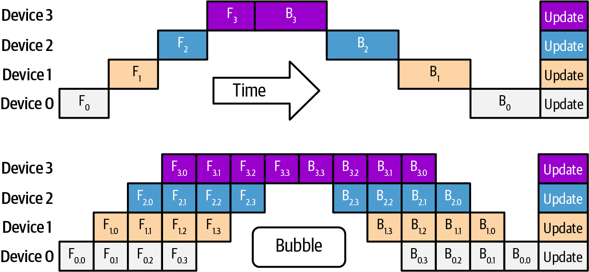
每个输入仅激活少量专家，专家并行可为拥有大量专家（常称为宽专家模型）的模型降低单设备内存、推理时间和计算成本。随着增加更多专家，这种基于 router 的条件专家计算模式可高效扩展。例如，DeepSeek-R1 有 256 个专家，但推理时 router 只选择 top-9 专家（包括 1 个共享专家）。
传统上，并行策略（包括组合多种并行技术的混合策略）在加载模型时预先选定并固定。不过，为在动态工作负载下最大化性能，现代推理引擎可基于输入特征，在运行时选择不同的并行策略。
高性能自适应推理系统使用运行时指标选择 TP、PP 或混合方式。关键因素包括批大小、序列长度、内存利用率，以及响应延迟与吞吐量要求。例如，极长提示词可路由至 TP + PP 实例，以将层分布到多个 GPU、避免显存不足（OOM）。
与此同时，短而延迟敏感的请求可路由到仅使用 TP 的模型实例，以避免流水线阶段开销。为此，服务引擎维护多个预分片模型实例，每个实例针对不同负载特征优化，并将传入查询动态分发至并行策略最符合该任务 SLO 的模型实例。
也可使用不同数量的分片。图 19-2展示了在八块 GPU 上以两种不同 TP 分片数配置的两套混合 TP + PP 并行方式。
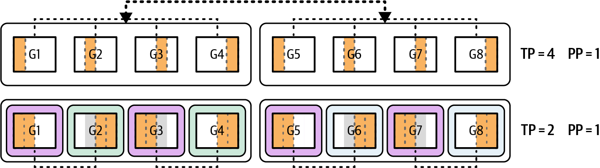
为长序列输入使用 PP 池有助于避免大输入序列造成的 OOM。相反，短提示词和延迟敏感查询可路由到针对低延迟优化的张量并行模型实例，从而避免 PP 的开销。这里的“动态”通常是把请求路由至已预配的 PP/TP 池，而非对正在运行的实例即时重分片。
由于每个请求可使用不同并行策略，系统需要维护多个模型实例供推理调度器/路由器选择。其中一个实例可使用 TP 针对低延迟优化，另一个则使用 TP 与 PP 针对高吞吐和大输入序列优化。
需要维护多个模型实例，是因为即时重分片会严重扰动 GPU 缓存，并给内存和网络子系统施加过大压力，尤其对超大模型更是如此。
运行时，每个查询根据其长度和指定服务等级协议（SLA）分发到最匹配的模型实例（分片策略）。例如，DeepSeek-R1 是约 6,800 亿参数的稀疏 MoE 模型，每个 token 在专家中仅激活约 370 亿参数。
为支持不同负载特征，可将 GPU 组织成逻辑 worker 池，每个池预先采用一种特定并行策略，例如张量并行，或张量 + 流水线混合并行。
来看一个示例。若有一台配备 8× GPU Blackwell B200 的服务器，其 HBM 总量为 1,440 GB（1,440 GB = 每 GPU 180 GB × 8 GPU），可跨四块 GPU 以四路 TP 服务 DeepSeek-R1，另四块 GPU 则空闲。
若单个查询带有极长上下文（例如 > 100 万 token），调度器可使用两阶段流水线：阶段 1 跨 GPU 0–3，阶段 2 跨 GPU 4–7。这样每个阶段可获得约 720 GB 总 HBM（每 GPU 180 GB × 4 GPU），有助于处理大型输入时避免 OOM。实际可容纳的上下文长度还取决于模型的 KV 大小、KV 精度、权重/激活占用和缓存策略，不能仅由 HBM 总容量推断。
反之，当数十个短而延迟敏感的提示词并发到达时，系统只将其路由至张量并行实例。避免填充和排空流水线阶段产生的空闲期（流水线气泡）后，此配置可在可用 GPU 资源内提供较低的单请求延迟。
要实现动态并行切换，可实现一个决策函数，检查输入序列长度、GPU 内存使用率和当前负载等运行时指标，并用这些指标为每个请求选择最合适分片的模型实例，如下所示：
defchoose_worker_pool(seq_len,gpu_mem_util,concurrent_reqs):# For long contexts or high memory pressure,# use hybrid pipeline + tensor parallelism# (example thresholds shown here)ifseq_len>4096orgpu_mem_util>0.8:return"tp_pp_hybrid"# For many simultaneous small requests, stick with tensor parallelismifconcurrent_reqs>4:return"tensor_parallel"# Fallback to tensor-parallel for typical workloadsreturn"tensor_parallel"
可在 GPU 集群上预先启动多个模型副本，其中一些只按 TP 分片，另一些按 TP + PP 分片；路由器再根据输入和决策策略将每个查询送至恰当副本。这样，大型内存密集任务获得完整流水线支持，短而延迟敏感的调用则在仅 TP 的实例上运行，避免不必要的流水线开销。
建议使用模型与硬件遥测数据指导并行切换。可实时监测 GPU 内存利用率、计算利用率和互连（如 NVLink/NVSwitch）流量以作决定。若因长流水线气泡发现 GPU 闲置，且有额外内存余量，可将流水线收缩为更少阶段，使每块 GPU 执行更多工作并保持忙碌。反之，若某些阶段触及内存限制或计算瓶颈，可扩展为更多流水线阶段，或提高张量并行度，以将计算和内存占用分布到更多 GPU。
关键是动态调节张量切分与流水线切分的平衡，以保持 GPU 良好利用，同时遵守内存约束并达到延迟目标；静态的一刀切配置无法实现这种能力。
Blackwell 等现代 GPU 引入了对 8 位和 4 位浮点（FP8/FP4）Tensor Core 运算单元的支持。这些低精度格式可带来显著加速和内存节省；质量损失是否很小则取决于模型、量化方案、内核与评测任务。
动态精度切换是一种高级技术：推理引擎根据模型置信度或资源压力在运行时调整数值精度，目标是在不显著损失质量的前提下提高吞吐。实践中，这可能意味着为效率以 FP8 或 FP4 执行模型的某些部分，并在需要稳定性时回退至更高精度（FP16/BF16）。这种按 token 或按步切换通常需要自定义内核、校准和回归验证，并非多数引擎的标准现成功能。
精度自适应的一个触发因素是logit 尖锐度，即模型输出置信度。例如，若模型对某个特定 token 的置信度很高，使下一 token 的概率分布呈现极尖峰，则低精度造成的小数值误差不太可能改变结果。
若下一 token 的生成可容忍低精度，引擎可在后续若干步使用 FP4 来获得速度；反之，若分布因不确定性高而更平坦，则应保持 FP8 或 FP16 以维持保真度。
推理引擎可通过计算词表上 softmax 分布的 Shannon 熵来量化不确定性。更低的熵表示更尖锐（更有信心）的预测。基于留出验证集调优的固定熵阈值，可决定何时降到 FP4、何时保持 FP8/FP16 以维持数值稳定性；目标是在延迟收益和准确率损失间取得平衡。
使用能维持准确率的最低精度；当以最大 softmax 概率衡量的模型置信度下降时，回退到更高精度。
这利用了一个事实：大型 LLM 在生成确定性续写（如闭合引号或完成列表）时往往更有把握，在这些情况下较低精度通常足够。
另一个因素是内存压力。若因极长上下文或众多并行请求使 GPU 内存使用接近上限，系统可动态将激活压缩至较低精度。
内存紧张时，可将注意力键/值张量以 INT4 而非 INT8 存储，理论上可将该部分内存占用降低 50%。但须确保 INT4 的量化误差不会在大量 decode 步中累积，建议定期重新评估输出质量。
例如，若推理达到 KV 缓存占用 90% 内存的程度，引擎可能决定将新的缓存条目从 INT8 量化到 INT4，甚至追溯压缩旧条目以释放空间。这可在不停止模型的情况下执行；后续注意力层只需读取 INT4 缓存值，但会引入量化误差。此类在线重新量化的成本、布局兼容性与精度影响必须针对具体引擎验证。
将 4 位权重量化与 8 位激活相结合可显著降低内存。对纯计算受限内核，FP8 激活在高带宽现代 GPU 上的特定配置中可实现最高约 2 倍吞吐；对混合或内存受限负载，约 1.5 倍可能可达。使用 FP4 激活还能进一步节省内存，但可能引入更高累积误差，需要谨慎进行逐层调优。
现代 GPU 提供原生 FP8 与 FP4 Tensor Core。不过，按本书写作时，PyTorch 的 AMP 支持（torch.autocast）仍只面向 FP16 和 BF16，不管理 FP8 或 FP4。虽然 PyTorch 存在 FP8 数据类型（如 torch.float8_e4m3 和 torch.float8_e5m2）及缩放计算路径，AMP 不负责管理它们。对于推理和训练，可在适用时使用 NVIDIA Transformer Engine（TE）及其 MXFP8、NVFP4；具体可用性需以所使用的 PyTorch、TE 和硬件版本为准。
对延迟关键的 decode，在 Blackwell 上使用 AMP 时可优先评估 BF16 而非 FP16。对 FP8 路径，Transformer Engine 的 MXFP8 是 Blackwell 上值得优先评估的默认格式；对 KV 缓存和轻量层可选择性尝试 NVFP4，并进行严格回归测试。务必针对特定工作负载逐层验证数值表现。
表 19-2汇总了一些精度配置示例及其权衡。较低精度通常会降低内存占用、提高吞吐量，但也可能带来质量退化。
| 精度模式 | 内存用量（相对值） | 计算吞吐量 | 质量影响（准确率变化） |
|---|---|---|---|
| FP16（基线） | 1.0×（100%） | 1.0×（基线） | 无影响（完整保真） |
| FP16 权重 + FP8 激活 | ~0.5× (50%) | ~1.5× | 可忽略（< 0.1%） |
| INT4 权重 + FP8 激活 | ~0.25× (25%) | ~1.8× （计算与内存混合受限） |
质量约下降 0.5% |
| INT4 权重 + FP4 激活 | ~0.2× (20%) | ~3.5× | 约下降 1%（需谨慎调优） |
这里可看到，若只考虑激活位宽，FP8 激活相对 FP16 基线可将激活内存减少约 50%。表中 FP8 激活测得的质量损失可忽略（< 0.1%）；但低精度的质量影响取决于模型和内核，必须用自己的数据与工作负载验证。
当内存是主要瓶颈时，INT4 权重 + FP8 激活工作流在特定配置中可达到约 1.8 倍基线吞吐量。INT4 权重 + FP4 激活可将相关内存降至基线的约 20%，表中速度提升约 3.5 倍；这与相对 FP16 理论峰值约 4 倍的位宽比相符，但端到端实测通常受内存、通信、量化/反量化和内核效率限制。
动态精度切换的目标是在输出质量保持于可接受范围内时最大化性能。理想情况下，内核运行在最快可用精度（如 FP8 或 FP4），仅在必要时回退到更高精度（如 FP16）。实践中，PyTorch 的 NVIDIA Transformer Engine 等库可提供逐层精度控制，但其粒度、可用格式与行为取决于版本和所用模块。
线性层可默认使用 FP8，但运行时 hook 可根据层的角色将其精度提高至 FP16 或降至 FP4。例如，可将 FP4 应用于允许轻微准确率退化的输出投影等轻量层，而处理原始用户输入、受益于较高精度的早期层可使用 FP8 或 FP16。
除逐层混合精度控制外，还可使用更细粒度的按 token 精度调整策略。预测很有信心时，该策略让推理系统以 FP8 等最快模式运行；不确定性变高时，再回退至 FP16 等高精度模式。此处为概念性实现，须评估调度和同步开销是否抵消精度切换收益。
在实践中，模型可先以默认精度（如 FP16）生成当前 token，再根据输出熵、最大 softmax 概率或 logit 方差等运行时指标评估置信度。
若模型对预测非常有信心，下一个 token 可按较低精度处理；不确定性高时，系统回退至更稳定的格式以维持输出质量。下面的示例代码说明这一概念：
importcontextlibimporttorch# ----------------------------# Safe Transformer Engine (TE) FP8 autocast import# ----------------------------try:# TE is only effective if your model actually uses TE-enabled layers# (e.g., Linear, LayerNorm wrappers).fromtransformer_engine.pytorchimportfp8_autocastas_te_fp8_autocast# type: ignore_TE_AVAILABLE=TrueexceptException:_TE_AVAILABLE=False# No-op stand-in so the code runs without TE installed. It never changes# numerical behavior.class_NullCtx(contextlib.ContextDecorator):def__init__(self,**_):passdef__enter__(self):returnselfdef__exit__(self,*exc):returnFalsedef_te_fp8_autocast(**_):return_NullCtx()# ----------------------------# Helper: choose the precision context *for this step* safely# ----------------------------def_precision_context_cuda(use_fp8:bool,prefer_bfloat16:bool,enable_fp8:bool):"""Enter exactly one precision context. If FP8 isn't enabled or TE ismissing/unused, fall back to AMP (BF16/FP16)."""ifuse_fp8andenable_fp8and_TE_AVAILABLE:# Note: fp8_autocast affects only TE-enabled modules. Non-TE modules# run at their native dtypes.return_te_fp8_autocast(enabled=True)amp_dtype=torch.bfloat16ifprefer_bfloat16elsetorch.float16returntorch.autocast(device_type="cuda",dtype=amp_dtype)def_precision_context(device:torch.device,use_fp8:bool,prefer_bfloat16:bool,enable_fp8:bool):return_precision_context_cuda(use_fp8,prefer_bfloat16,enable_fp8)ifdevice.type=="cuda"elsecontextlib.nullcontext()# ----------------------------# Main decode loop with smoothed, hysteretic precision switching# ----------------------------@torch.no_grad()defdecode_with_dynamic_precision(model,tokens:torch.Tensor,max_steps:int,*,device:torch.device=torch.device("cuda"),prefer_bfloat16:bool=True,# B200: prefer BF16 over FP16 for AMPenable_fp8:bool=True,# Allow FP8 when TE presententer_fp8_threshold:float=6.0,# hysteresis upper bound# (logit margin average)exit_fp8_threshold:float=3.0,# hysteresis lower bound (avoid flapping)reeval_interval:int=8,# compute/inspect confidence every N steps# to avoid per-step synctopk_dim:int=-1,# last dimension holds vocabulary logitseos_id:int|None=None,):"""Autoregressive decode loop that *smoothly* switches between AMP (BF16/FP16)and FP8 (TE) without per-step host sync. Works even when TE is notinstalled; in that case, runs AMP only.- Confidence signal: mean(top1 - top2) logits margin across the batch.- Smoothing: EMA + interval re-evaluation to minimize CPU-GPU sync pressure.- Hysteresis: separate enter/exit thresholds to avoid precision flapping."""assertexit_fp8_threshold<=enter_fp8_threshold,"Hysteresis requires exit <= enter threshold"model.eval()tokens=tokens.to(device,non_blocking=True)# Internal stateuse_fp8:bool=False# start in AMP.# Upgrade to FP8 when sustained confidence permitsema_conf:torch.Tensor|None=None# stays on device;# host consults only at intervalsalpha=0.2# EMA smoothing factor for confidence# A tiny helper to update on-device EMA without host syncdef_update_confidence_ema(logits:torch.Tensor)->torch.Tensor:# logits: [B, vocab] or [B, T, vocab]. Use the last time-step if 3D.last=logitsiflogits.dim()==2elselogits[:,-1,:]# Compute top-2 margin on-devicetop2=torch.topk(last,k=2,dim=topk_dim).values# [B, 2]margin=(top2[:,0]-top2[:,1]).mean()# scalar tensor on devicenonlocalema_confema_conf=(1-alpha)*(ema_confifema_confisnotNoneelsemargin)+alpha*marginreturnema_conf# device scalar# Decodeforstepinrange(max_steps):# 1) Precision context (exactly one).# No nested contexts, no leakage across iterations.with_precision_context(device,use_fp8,prefer_bfloat16,enable_fp8):# Forward pass (HF-style or plain)try:logits=model(input_ids=tokens)ifhasattr(logits,"logits"):logits=logits.logitsexceptTypeError:logits=model(tokens)# 2) Pick next token from the *last* positionlast_step_logits=logitsiflogits.dim()==2elselogits[:,-1,:]next_token=torch.argmax(last_step_logits,dim=-1,keepdim=True)# [B, 1]tokens=torch.cat([tokens,next_token],dim=1)# 3) Update on-device EMA signal every step (no host sync yet)conf_dev=_update_confidence_ema(logits)# 4) Periodically re-evaluate precision choice on host# to avoid per-step syncif(step+1)%reeval_interval==0:conf_value=float(conf_dev)# exactly one tiny sync every N stepsifnotuse_fp8andenable_fp8and_TE_AVAILABLEand(conf_value>enter_fp8_threshold):use_fp8=Trueelifuse_fp8and(conf_value<exit_fp8_threshold):use_fp8=False# 5) EOS handlingifeos_idisnotNone:if(tokens[:,-1]==eos_id).all():breakreturntokens# ----------------------------# Example (commented):# ----------------------------# model = ... # your TE-enabled model (or any torch.nn.Module)# input_ids = torch.randint(0, vocab_size, (batch_size, seq_len))# out = decode_with_dynamic_precision(model, input_ids, max_steps=128,# eos_id=tokenizer.eos_token_id)# print(out.shape)
这里可以看到，按本书写作时，PyTorch autocast 仅支持 FP16 和 BF16 这两种降精度路径。若要让受支持模块走 FP8 内核，需要使用 Transformer Engine 库；这也要求模型实际采用了 TE 支持的模块。
本示例使用的阈值（进入 = 6.0、退出 = 3.0）应使用有代表性的提示词在验证集上校准，避免延迟收益影响准确率。
该模式创建了弹性精度机制，旨在最大化吞吐量。当模型处于可预测区域（如低熵区域），例如生成标点或模板化续写时，可继续使用 FP8 以提高性能；当进入高熵片段，如含糊提示词或决策点时，则回到 FP16 以保持数值准确性。
结合现代 GPU 的低精度运算支持，按 token 动态精度切换可作为高吞吐、延迟敏感推理的一种自适应策略：仅在适合时使用低精度，降低计算开销，并力求在多种提示词条件下保持响应质量。其端到端收益必须与置信度计算、同步和切换成本一起实测评估。
神经网络层在 GPU 上的性能会随线程块大小、tile 维度、循环展开和内存访问模式等底层参数而显著变化。对于固定尺寸模型，库通常只选择一次这些参数，往往基于通用启发式或离线调优。
但在在线推理服务中，序列长度、批大小等输入尺寸会随请求变化。内核自动调优指一种运行时机制：为当前负载选择最优内核变体，甚至 JIT 编译相应变体。
对于大型 Transformer 模型，推理的两个主要计算阶段是自注意力和前馈 MLP 层；两者的 GPU 内核都可从自动调优中受益。下面分别讨论。
考虑一个具有 H 个注意力头、处理长度为 L 的序列的注意力层。注意力有许多实现，包括标准注意力、优化的 FlashAttention 及其多个变体。
FlashAttention 及其变体凭借 tile 化、并行和内存访问改进，通常对长序列显著更快；但对很短的序列，其开销可能超过收益。动态引擎可依据序列长度 L，在 FlashAttention 内核与较简单内核间切换。
例如，若请求有 L = 256 个 token，引擎可使用一次性通过全局内存读取计算注意力的直接内核启动，这对较小 L 已足够。若另一个请求有 L = 2,048，则可切换为 FlashAttention 的专用 tile 内核：它通过在共享内存复用数据、避免不必要的 HBM 读取，已知可更好地随大 L 扩展。下面用基于输入序列长度的条件语句说明：
// Note: example threshold shown hereif(seq_len<256){// global-memory version, best for small Lattn_kernel=standard_attention_kernel;}else{// tiled loads, best for large Lattn_kernel=tiled_attention_kernel;}output=attn_kernel(Q,K,V,mask);
在底层，attn_kernel 会在完全不同的 CUDA 实现之间选择：一种使用默认注意力内核、针对小输入优化；另一种使用 tile 内核、针对大上下文优化。
理想的 tile 维度取决于 GPU 的共享内存容量和计算资源。CUTLASS、OpenAI Triton 等框架包含自动调优器：它们在初始化时，甚至自适应地在运行时，对一系列 (TILE_Q, TILE_K) 组合做基准测试，以选择最快变体。表 19-3展示不同 tile 大小在 Blackwell 级 GPU 上的性能示例。
| Tile 大小 | 共享内存（KB） | 占用率（%） | 吞吐量（GOPS） |
|---|---|---|---|
| 64 × 64 | 48 | 85 | 8.2 |
| 128 × 64 | 64 | 78 | 10.5 |
| 128 × 128 | 96 | 72 | 9.8 |
| 256 × 128 | 128 | 60 | 11.3 |
根据输入在运行时选择恰当变体，可避免一刀切方案造成的大幅性能断崖。实践中可在目标硬件上做基准测试，发现 L = 128 左右可能是盈亏平衡点；实际阈值应以模型、内核和硬件测量为准。
接下来在自动调优背景下分析前馈 MLP 内核。前馈层本质上是大型矩阵乘法，具体为两次线性投影，中间夹一个非线性激活。
PyTorch 等现代 AI 框架使用 cuBLAS、CUTLASS 等优化 CUDA 库提供的高性能 GEMM 内核。对于给定矩阵大小，这些库通常有多个算法变体，采用不同的 tile 策略、不同 Tensor Core 路径和独立后备路径。
例如，NVIDIA 的 cuBLAS 和 cuBLASLt 库可通过先尝试若干算法、再选择给定维度最快算法的方式自动调优 GEMM 内核。但这通常在首次遇到该形状的 GEMM 时发生，之后未必重新评估。
若 cuBLAS/cuBLASLt 或自定义内核可用，可通过 programmatic dependent launch（PDL）缩小启动间隙、改善稳态吞吐量。务必进行性能分析以确认重叠效果。
在会遇到多种批大小的推理服务器中，可显式调用这类自动调优机制，或维护最佳算法缓存。例如，对于 MLP 形状为 [batch_size, hidden_dim] x [hidden_dim, 4*hidden_dim] 的 GEMM，batch_size = 1 与 batch_size = 16 的最优内核可能不同。
引擎可检测新批大小，并使用 cuBLASLt 或自定义实现对候选内核执行快速微基准测试，选出最快内核；该批大小后续调用即可直接使用已选内核。
此外，一些推理框架和运行时使用 OpenAI 的 Triton GPU 内核领域专用语言（DSL），以自动调优的 tile 大小即时编译注意力和 MLP 内核。运行时会生成若干具有不同 tile 大小（如 128 × 128、64 × 256）的内核变体，并针对实际硬件与输入形状测量哪一个表现更佳。
可使用 Nsight Systems 等工具并排实测分析不同内核变体。
具体地说，Nsight Systems 提供详细 CUDA 时间线，包括 memcpy 和 NVLink 活动；Nsight Compute 提供内存工作负载分析，有助于将缓存与内存行为归因到具体内核位置。这对评估 tile 大小与共享内存权衡特别有用，也常能揭示 L2 缓存未命中等不明显的瓶颈，进一步指导调优决策。
由于 L2 缓存效应、内存 bank 冲突等原因，硬件在负载下有时难以完全预测，实证调优通常优于理论猜测；但以合理的理论值作为调优起点仍然有益。
动态 tile 切换会影响 GPU 占用率，因此选择 tile 大小时应考虑这一点。较大 tile 可提高复用、降低内核启动开销，但也会使用更多寄存器和共享内存，从而可能减少可并发运行的线程块数、降低占用率。合格的自动调优器会考虑这种权衡。
在注意力内核中，较大 tile（如 128 × 128）可最大化共享内存中的数据复用。它适合长序列：可发出更少的全局内存读取、摊销循环开销，并产生更高的持续吞吐量。
但对较短序列，同样的大 tile 可能消耗过多共享内存，限制每个 SM 并发运行的线程块数（即占用率）。为短序列减小 tile 大小（如 64 × 64）可释放共享内存，以并行调度更多块，从而提高 SM 占用率、降低单内核延迟。
依据输入序列长度自适应 tile 大小，可使内核在多数情况下达到接近最优的占用率。一些系统甚至在运行时查询 CUDA Occupancy API，动态选择线程块大小等内核启动参数。下面给出 C++ Occupancy API 示例，Python API 也可用：
// Pseudocode for occupancy-based launch configurationintmaxBlocks,bestThreads;for(intthreads=64;threads<=256;threads*=2){cudaOccupancyMaxActiveBlocksPerMultiprocessor(&maxBlocks,MyKernel,threads,sharedMemPerBlock(threads));// choose "threads" to maximize occupancy// (remember to not exceed the max threads per SM limit (e.g., 2,048)floatoccupancy=(float)maxBlocks*threads/hardwareMaxThreadsPerSM;}
这段伪 C++ 展示了如何为内核评估不同线程块大小。它根据共享内存用量检查每个 SM 可运行多少块，之后内核启动相应调整线程数或共享内存用量。高性能框架和推理引擎会在内部按以下步骤自动化这类逻辑：
检查下一次模型前向传播的当前输入维度（批大小 B、序列长度 L 等）。
确定各组件可用的内核实现，例如注意力阶段的标准注意力或 FlashAttention，以及 MLP 阶段合适的 GEMM 算法。
在样本数据上让每个算法运行若干次，对各候选执行快速测试。
根据测得维度，选择执行时间最短或吞吐量足够的内核。
将选择结果存入以输入维度或工作负载签名为键的查找表。之后出现相似请求时，无须重复这些步骤即可获知最佳内核。
使用选定的内核实现运行模型层。
这类似于数据库查询优化器选择查询计划；此处的“计划”就是被选中的内核实现。
遵循该过程，推理运行时可持续自我调优。随着时间推移，系统为短/长提示词、小/大批次等场景构建优化路径库。可通过异步调优来保持即时调优开销较低——当前推理使用默认内核时，在独立 stream 测试新内核——或者在低流量时段进行，以免影响延迟。
建议在模型加载时纳入初始预热阶段，运行多种样本输入以触发自动调优；其中可包括最大序列长度、最大批大小等极端情况，使引擎预先为这些情况优化内核。
还应在运行时监测每一层的执行时间。若某层因输入特征变化突然成为瓶颈，就应重新评估内核选择。
一些高级框架甚至使用多臂老虎机算法，持续探索替代内核，并随条件变化更新内核选择。
简言之，自动调优将静态内核转化为自适应内核。它能针对每组输入尽可能挖掘 GPU 集群性能；实际收益取决于调优候选、缓存命中、调优开销和工作负载。
在实时场景服务 LLM 时，首 token 时间（TTFT）是一项关键指标，它衡量系统产生模型响应首个 token 的速度，并直接影响终端用户体验。
大型模型 TTFT 的一个主要构成是，在可开始生成 token 前建立模型内部状态（如键值 KV 缓存）所花的时间。正如前章所述，注意力 KV 缓存存放每层历史 token 的键和值投影。
推测性 KV 预取是一种优化：系统预测生成第一个 token 所需的数据，并提前将其加载到 GPU。这会将 KV 缓存准备与计算等其他步骤重叠，使 token 生成能更快开始。SpeCache 是推测性 KV 缓存的一个研究示例，如图 19-3所示。
在 SpeCache 中，KV 缓存被压缩（此处为 16 位），并按层移出 GPU，从而降低内存占用。生成第一个输出 token 后，会计算一个推测的“下一” token；同时，模型预取该首次 decode 步所需的相应降精度 KV 对。
在每个后续步骤中，模型并行 decode 两个 token，包括实际输出 token 和推测 token。两个结果都会输入下一步；每步前会预取推测路径最相关的 top-k 个 16 位 KV 对，使两条路径都准备好所需 KV 缓存。简言之，SpeCache 在其评测中通过预取降精度 KV 并与计算重叠，报告了 TTFT 改进。
只有在验证访问模式和存储层级后，才应集成推测性预取技术。
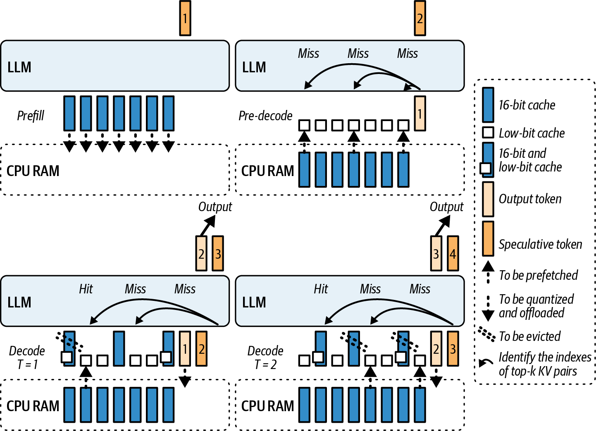
由于现代 LLM 的层数、不断扩大的上下文窗口以及现代“思考”模型生成的大量推理链，KV 缓存可能极大。现代推理系统常在 GPU、CPU 内存和 SSD 间换入换出 KV 缓存以更好地管理容量，尤其是无法装入 GPU 内存的极长上下文。
生成新 token 时，朴素方法是同步地从 KV 所在位置（部分在 GPU、部分在 CPU）取回数据，再计算下一个 token 的 decode。这会增加显著延迟，尤其缓存已被换出到 CPU 内存或 NVMe 存储时。
KV 缓存预取通过提前开始 KV 数据传输来提供帮助。用户提示词一收到，服务器便可开始把所需 KV页以及模型权重直接复制到 GPU 内存。到模型在 prefill 阶段完成提示词计算时，生成第一个输出 token 所需的数据已经就位。
具体来说，该机制仅将当前层的 KV 保留在 GPU 内存，并将其他层 KV 卸载到 CPU。计算当前层时，它异步预取下一层缓存到 GPU，同时将上一层缓存写回 CPU。
通信与计算的这种重叠使 GPU 很少等待数据。因此，使用 CPU 内存中卸载的 KV 缓存对延迟的影响可能较小；但仍有传输开销。例如，在合适的重叠条件下，卸载后 tokens/s 吞吐量可能降低约 5%–10%，实际取决于 CPU DRAM 带宽、PCIe/NVLink、模型层数、批大小和序列长度。
重叠可掩盖 CPU 驻留 KV 的大部分延迟，但通常仍会因 CPU DRAM 带宽和 PCIe 开销而有吞吐损失。应针对自身的批大小和序列长度反复分析性能。
Hugging Face Transformers 库中 KV 缓存卸载的一个例子是 OffloadedCache 机制。调用 generate(cache_implementation="offloaded") 或 generate(cache_implementation="offloaded_static") 时可启用它，从而使用 Transformers 库生成 token，如下所示。它的接入成本较低，但收益大小依工作负载而定：
# Dynamic, variable-length serving and sliding layers# (recommended default)out=model.generate(...,cache_implementation="offloaded")# Static shapes + torch.compile and CUDA Graphs# (highest throughput with fixed shapes, use with torch.compile)# out = model.generate(..., cache_implementation="offloaded_static")
在底层，生成开始时，OffloadedCache 会确保第 1 层的 KV 移入 GPU。第 1 层计算期间，OffloadedCache 为第 2 层的 KV 从 CPU 向 GPU 发起异步 DMA，依此类推；它始终提前一层进行预取。
当前向传播到达第 2 层时，其 KV 已在本地，从而减少每层同步复制本会造成的停顿。介绍完普通 KV 预取后，接下来讨论推测性 KV 预取。
推测性 KV 预取超越了常规 KV 预取仅提前一层的前瞻范围。设想一种推理服务器配置：它有多个模型副本，或具有多个可能路径，例如 MoE 模型中一个 token 可被路由到若干专家网络之一。
KV 预取有助于阶段边界处的衔接。理想情况下，到 prefill 阶段结束时，各层缓存已经位于 GPU 内存，或已排队等待移入 GPU 内存。这样生成开始后模型无须等待内存传输，因而可直接降低 TTFT。
建议使用 NVTX marker 等追踪工具持续监测 TTFT，并测量首 token 的 decode 时间，以精确量化 TTFT。若 decode 阶段刚开始就出现异常的空闲时间尖峰，说明可能错过了预取机会。
要在自己的栈中实现 KV 预取而不阻塞推理，可按第 11 章所述，使用 CUDA stream 来重叠传输与计算，使预取与主计算 stream 并发运行。之后仅在需要预取数据时使用 CUDA event 同步这些 stream，如下所示：
// kv_prefetch_overlap.cu#include<cstdio>#include<cuda_runtime.h>// Example sizesstaticconstexprsize_tKV_BYTES=/* set to your chunk size */8ull<<20;// 8 MiB__global__voidforward_kernel(/* ... */){// compute logits for current token ...}__global__voidconsume_prefetched_kv(/* use prefetch_dest */){// consumes KV in prefetch_dest ...}intmain(){// Allocate destination buffer on this GPUvoid*prefetch_dest=nullptr;cudaMalloc(&prefetch_dest,KV_BYTES);// Example: staging source on host. MUST be pinned for real overlap.void*kv_src_host=nullptr;cudaMallocHost(&kv_src_host,KV_BYTES);// pinned (page-locked)// Fill kv_src_host with data for the first iteration...cudaStream_tcompute_stream,prefetch_stream;cudaStreamCreateWithFlags(&compute_stream,cudaStreamNonBlocking);cudaStreamCreateWithFlags(&prefetch_stream,cudaStreamNonBlocking);cudaEvent_tkv_ready;cudaEventCreateWithFlags(&kv_ready,cudaEventDisableTiming);booldone=false;while(!done){// 1) Launch compute for current tokenforward_kernel<<</*grid*/1,/*block*/1,0,compute_stream>>>();// 2) Asynchronously prefetch next KV chunk// If your source is another GPU, use cudaMemcpyPeerAsync// and enable peer access.cudaMemcpyAsync(prefetch_dest,kv_src_host,KV_BYTES,cudaMemcpyHostToDevice,prefetch_stream);cudaEventRecord(kv_ready,prefetch_stream);// 3) Ensure consumer on compute_stream waits just-in-timecudaStreamWaitEvent(compute_stream,kv_ready,/*flags*/0);// 4) Launch work that consumes the prefetched KVconsume_prefetched_kv<<</*grid*/1,/*block*/1,0,compute_stream>>>();// 5) ...advance state, update kv_src_host for next iteration, set `done`done=true;// demo}cudaEventDestroy(kv_ready);cudaStreamDestroy(prefetch_stream);cudaStreamDestroy(compute_stream);cudaFree(prefetch_dest);cudaFreeHost(kv_src_host);return0;}
在该设置中，cudaMemcpyAsync 在 prefetch_stream 上运行，而 model.forward() 使用 compute_stream。这让 CUDA 驱动可重叠数据传输与计算。仅当实际需要预取 KV 数据时，才在继续消费该数据的计算前等待 kv_ready event；该 event 在交接点实施即时同步。
务必让主机缓冲区固定（page-locked）；否则 cudaMemcpyAsync 可能串行化，无法获得期望的复制/计算重叠。若 KV 源在另一 GPU，使用 cudaMemcpyPeerAsync 并启用 peer access。若使用 Unified Memory（如 Grace Blackwell、Vera Rubin 超级芯片），可考虑使用 cudaMemPrefetchAsync 提前暂存页面。若模式可重复，还可用 CUDA Graphs 捕获该序列，从而在频繁预取时进一步降低内核启动开销。
使用独立 stream 可实现高效流水线。当一个 token 正在生成时，下一个 token 的 KV 缓存可被预取而不打断计算 stream。这样通过隐藏传输延迟、持续为计算单元提供数据来提高 GPU 利用率。现代 LLM 推理引擎可在分页 KV 缓存等机制中自动采用类似重叠。
最好将权重和 KV 缓存的数据移动视为整个推理流水线的一部分。正如应将计算操作流水化一样，也应将数据移动流水化：当前计算进行时，让下一份所需数据在传输途中。KV 缓存压缩是改善 KV 缓存层性能的另一选项，下面讨论。
LLM 在会话中生成越来越多 token 时，KV 缓存线性增长。对长对话、文档和推理链，KV 缓存会消耗大量 GPU 内存，且往往是主要内存消费者。
KV 缓存很适合压缩/量化。和任何压缩形式一样，KV 缓存压缩会降低其内存占用；实时执行则意味着在推理期间即时压缩。
策略切换是指压缩策略可根据当前上下文改变。目标是在需要时释放内存和网络带宽，同时尽量不影响模型准确率或减慢涉及 KV 缓存数据的计算。图 19-4展示了几种 KV 缓存压缩算法。
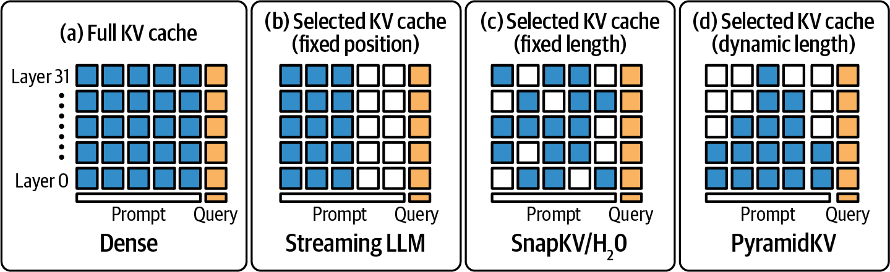
一种直接、简单的 KV 压缩方法是降低其精度。许多框架的 KV 缓存默认使用 FP16 或 BF16，因为模型激活通常使用 16 位。但键和值往往可压缩至 8 位甚至 4 位，而对输出质量的影响可能较小；这种影响仍取决于模型、上下文位置、量化方案和任务，必须验证。
Hugging Face Transformers 库支持用于 KV 内存的 QuantizedCache，包括 INT8 和 INT4。可通过指定 cache_implementation="quantized" 与特定位宽，用一行启用该特性。其代价是量化/反量化增加少量计算，换取显著内存节省；整体模型质量是否受损及受损程度依模型、后端、位宽和工作负载而定。
同时使用量化和 CPU offload 时，应确保主机缓冲区被固定（page-locked），以避免传输串行化，并有助于维持复制带宽（如 PCIe/NVLink）。
接下来讨论动态策略切换。一个策略示例是保留最后 128 个 token 的完整精度，而将其他 token 压缩为 4 位。这样，最近上下文通常可用更高精度保留，较早历史则以较低精度存储以节省空间；但“最近一定最重要”并不是所有任务、模型和注意力模式下都成立。
若模型突然需要关注较早 token，影响不一定会很严重，因为许多 LLM 确实表现出近因偏置，即偏向最近上下文；但长距离检索、代码和文档问答等任务可能高度依赖早期内容，因此应进行评测。
还可根据用户提示词长度调整该窗口。例如，极长提示词使用更大的全精度窗口，或在 GPU 内存使用超过阈值时更激进地压缩。
策略也可基于内存使用。例如，可规定 GPU 内存使用超过 80% 时，将整个 KV 缓存压缩为 8 位，以帮助避免长生成中的 OOM。策略可包含多层压缩：轻度压力时压缩至 8 位，极端压力时再改为 4 位。
真正动态、实时的策略切换可让引擎在生成 token 期间改用不同压缩方式。这种实现需要同时维护缓存的多个表示：例如，初始以 FP16 存储 KV，同时维护同一数据的 INT8 版本。
系统默认使用 FP16；若内存利用率跨过某阈值，可开始使用带合适缩放因子的 INT8 版本，并释放 FP16 内存以缓解压力。之后的注意力读取从 INT8 存储取得反量化值。
但这需要谨慎同步，确保压缩版本在需要时已更新完毕、可供使用。双缓冲和后台压缩线程等技术在此有用。
通常 CPU 线程可利用向量化 INT8 量化操作异步执行压缩，准备好后再将压缩块复制到 GPU 内存；是否合算取决于 CPU 算力和互连带宽。
应在安全点（如一次迭代结束）执行实时策略切换，以避免在计算中途切换，并可在后台 stream 执行重新量化来隐藏其延迟。
还存在无损压缩等其他技术，它们使用熵编码和聚类来压缩激活、做到逐位不丢失信息。但这些实现复杂，即使在 GPU 上也可能太慢，难以实时执行。
可考虑分块 ZFP（一种浮点压缩）等更简单机制，或通用的基于 CPU 的压缩；但截至本书写作时，最简单、通常最有效且支持最广的方法仍是量化。
按本书写作时，ZFP 等无损方法虽在离线和研究场景中被评估，但相对量化缓存受吞吐约束，在生产 LLM KV 缓存路径中仍不常见。因此，量化凭借速度与约 2–4 倍内存缩减的平衡，仍是首选方法。
为尽量减少质量影响，可尝试按 head 或按 token 缩放。KV 缓存量化是否以按 head、分组缩放优于按 token 缩放，取决于后端、模型与形状；Hugging Face QuantizedCache 的实现会按注意力 head 校准值范围。
具体来说，QuantizedCache 实现了逐通道、分组量化，具有可配置组大小和残差窗口；残差窗口将最近 token 保留为原始精度。通过设置 cache_implementation="quantized" 并将 cache_config 作为字典传入即可启用。可计算张量中的最大绝对值，并据此缩放 4 位或 8 位量化；本质上这是一种 min-max 或基于幅值的量化。
QuantizedCache 的一种有用实现是 半二次量化（Half-Quadratic Quantization，HQQ）后端。HQQ 提供免校准的即时量化器，支持 2 位、3 位、4 位和 8 位等多种低比特格式。它使用鲁棒优化来建模异常值和重尾误差分布，并可集成到 Hugging Face Transformers 的 KV 缓存实现中，提供 PyTorch 和自定义 CUDA 内核实现以支持快速推理；可用后端和位宽以所用 Transformers/HQQ 版本为准。
可实现一个动态策略，根据内存压力在 8 位量化与 4 位量化间切换。数值的尖锐度或分布也可指导决策：若缓存值大多很小、方差低，可能可更激进量化。实时切换压缩策略可与 Hugging Face QuantizedCache 机制结合，但需要评估重新量化成本与数值影响。
遗憾的是，Transformers 不支持原地改变已初始化缓存对象的位宽。为实现动态策略，代码可将 token 分成小块生成，并在存在内存压力时，以新的量化缓存配置启动下一块。这种实现类似于命中内存不足（OOM）错误后回退至 offloaded cache。代码如下：
# dynamic_quantized_cache.py# Dynamic KV cache policy using Hugging Face Transformers' QuantizedCache (2025).# Starts with int8 HQQ and drops to int4 when device memory is tight.# Requires: transformers >= 4.55, hqq (for HQQ backend).## This uses only public APIs:# - cache_implementation="quantized"# - cache_config as a dict## References:# - KV cache strategies docs (QuantizedCache, HQQ/Quanto backends)from__future__importannotationsfromtypingimportDict,OptionalimportloggingimporttorchfromtransformersimportAutoModelForCausalLM,AutoTokenizerdefmake_cache_config(*,backend:str,nbits:int,device:torch.device,compute_dtype:torch.dtype=torch.float16,q_group_size:int=64,residual_length:int=128,axis_key:int=1,axis_value:int=1,)->Dict:"""Build a cache_config dictionary accepted by Transformers' quantized cache.HQQ supports nbits in {2, 4, 8}; Quanto supports {2, 4}.axis_key/axis_value=1 are recommended for HQQ."""return{"backend":backend,# "HQQ" or "quanto""nbits":int(nbits),"axis_key":axis_key,"axis_value":axis_value,"q_group_size":int(q_group_size),# group size along head_dim"residual_length":int(residual_length),# recent tokens (orig precision)"compute_dtype":compute_dtype,# dequantization compute dtype}def_gpu_used_ratio()->float:"""Return fraction of device memory used as 1 - free/total.Uses CUDA driver info, which reflects true device state,not just the PyTorch allocator's reserved bytes."""free,total=torch.cuda.mem_get_info()return1.0-(free/total)@torch.no_grad()defgenerate_with_dynamic_quantized_cache(model:AutoModelForCausalLM,tokenizer:AutoTokenizer,prompt:str,*,max_new_tokens:int=256,chunk_tokens:int=32,memory_threshold:float=0.90,# switch policy if used_ratio >= thresholdbackend:str="hqq",# "hqq" or "quanto"start_bits:int=8,# initial cache bit-widthfallback_bits:int=4,# lower bit-width on pressureresidual_length:int=128,)->str:"""Generate text in chunks while allowing mid-run policy changes.The policy applies to each chunk by choosing cache_config for that chunk.If memory is tight, we switch from int8 to int4 in subsequent chunks."""backend=backend.lower()assertbackendin{"hqq","quanto"},"backend must be 'hqq' or 'quanto'"ifbackend=="quanto":assertstart_bitsin{2,4}andfallback_bitsin{2,4},"Quanto supports only 2 or 4 bits"ifbackend=="hqq":assertstart_bitsin{2,4,8}andfallback_bitsin{2,4,8},"HQQ supports 2, 4, or 8 bits"device=model.deviceinputs=tokenizer(prompt,return_tensors="pt").to(device)generated_ids=inputs["input_ids"]# [batch=1, seq_len]tokens_remaining=int(max_new_tokens)current_bits=int(start_bits)# Use EOS if available to terminate early.eos_id:Optional[int]=tokenizer.eos_token_idwhiletokens_remaining>0:# Decide policy for this chunk based on current memory pressure.iftorch.cuda.is_available():# Smooth the signal to avoid oscillation# when multiple processes are active.if'used_ratio'inlocals():used_ratio=0.8*used_ratio+0.2*_gpu_used_ratio()else:used_ratio=_gpu_used_ratio()ifused_ratio>=memory_threshold:current_bits=min(current_bits,fallback_bits)# drop bitslogging.info(f"Current bits{current_bits}")cache_cfg=make_cache_config(backend=backend,nbits=current_bits,device=device,compute_dtype=torch.bfloat16,q_group_size=64,residual_length=residual_length,axis_key=1,axis_value=1,)# Generate a small chunk with the chosen cache policy.this_chunk=min(chunk_tokens,tokens_remaining)out=model.generate(input_ids=generated_ids,max_new_tokens=this_chunk,do_sample=False,# deterministic for clarity; adjust as neededuse_cache=True,cache_implementation="quantized",# select QuantizedCachecache_config=cache_cfg,# pass backend + settingspad_token_id=eos_id,return_dict_in_generate=False,# we only need the tokens here)# 'out' is [1, old_len + this_chunk]; slice out newly generated suffixnew_tokens=out[:,generated_ids.shape[1]:]generated_ids=outtokens_remaining-=new_tokens.shape[1]# Early termination if the model emitted EOS.ifeos_idisnotNoneandint(new_tokens[0,-1].item())==eos_id:breakreturntokenizer.decode(generated_ids[0],skip_special_tokens=True)if__name__=="__main__":# Example usage. Replace with a model that supports your hardware.ckpt="meta-llama/Llama-3.1-8B-Instruct"tok=AutoTokenizer.from_pretrained(ckpt)mdl=AutoModelForCausalLM.from_pretrained(ckpt,torch_dtype=torch.float16).to("cuda")text=generate_with_dynamic_quantized_cache(mdl,tok,"Explain attention key-value caches in one paragraph.",max_new_tokens=120,chunk_tokens=32,memory_threshold=0.90,backend="hqq",# or "quanto" if you installed Quantostart_bits=8,fallback_bits=4,residual_length=128,)(text)
这里先以 INT8 HQQ 缓存进行适度压缩，在实际 GPU 可用内存降至阈值以下时切换到 INT4。这通过 torch.cuda.mem_get_info() 测量，它反映设备内存实际空闲量与总量，为策略选择提供信号。
随后以小块生成 token，因此可在块与块之间安全切换策略，而不必修改既有缓存实例。这避免访问私有属性或手动量化张量；缓存后端在模型前向传播内完成相应工作。
如示例所示，策略切换时建议记录事件或递增计数器，以便将压缩事件与准确率或输出异常关联起来。
同样，条件改善时可动态关闭压缩。假设长对话刚结束、下一个问题很短，系统可决定停止压缩，甚至将部分缓存恢复为更高精度，前提是这样会产生更高质量响应；差异可能很小，未必值得付出恢复成本。
避免压缩快速波动很重要，因为频繁开关压缩会造成性能抖动。为此，可在变化间引入有意延迟（即滞回和冷却期）。例如，切换到更高压缩策略后，保持该策略直至 GPU 内存降到远低于给定阈值，从而避免振荡和抖动。
这种灵活性很有用，例如服务有时为高级用户优先保证最高质量（不压缩），而为免费层用户优先保证最高吞吐量（更激进压缩）。策略也可根据用户订阅类型等请求元数据切换。
讨论缓存还必须考虑最近最少使用（LRU）等驱逐策略。若上下文长度过长，一些具有近因偏置或滑动窗口注意力的模型架构可能选择完全丢弃或下采样很旧的 token。图 19-5展示了滑动窗口注意力。
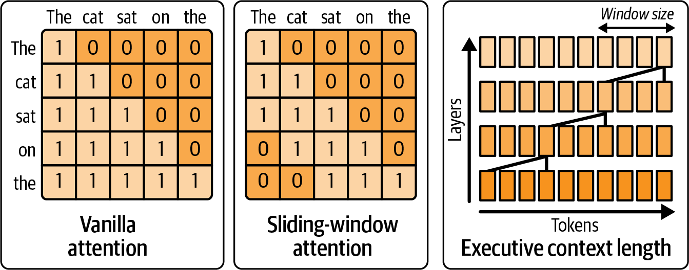
从上下文中 LRU 驱逐较早 token 并不严格属于压缩，却是另一种可在运行时动态选择的策略。例如，系统可依据某些启发式或更小 LLM 判断：超过 2,048 token 后模型可能不再需要较早 token；这种判断必须与模型的实际注意力模式和任务需求相验证。
此时系统可开始丢弃这些旧 token，或定期将其压缩为较小摘要。这已进入模型与算法范畴，需要更多支持、维护和模型训练，但确实是高级服务引擎应考虑的一种动态上下文管理形式。
简言之，应考虑推理引擎提供的量化缓存机制，因为它们可处理维护量化缩放因子、与注意力内核接口及运行时监测 GPU 内存分配器等细节。至少当系统发现内存利用率接近限制时，应记录这一点，并评估在该点启用压缩策略能否避免 OOM 而不损害延迟。
实践中，可将 GPU 内存高水位阈值（如 80%）作为触发 8 位压缩的起点，以帮助避免生产环境 OOM；实际阈值须基于模型、并发和预留工作空间实测设置。
若动态压缩策略确有意义，可实现相应触发器。与任何量化和压缩策略一样，务必测试它们对所在领域模型输出的影响。许多生成任务可容忍激进压缩，但仍应验证 4 位相对 8 位不会引入错误或意外输出。
到目前为止讨论的许多技术，都涉及根据系统当前状态做决策。这些决策常须在速度与准确率、吞吐量与延迟间取舍。与其收集越来越多启发式规则，也可使用具有 RL 智能体、环境、策略和奖励的强化学习来调优推理系统。
这是一种前沿方法。应先以更简单的启发式规则作为基线，待基础系统稳定后再将 RL 作为渐进式改进。
具体来说，推理引擎观察服务器指标（环境），选择动作（策略）以在延迟低于目标时最大化吞吐量，并接收指导持续改进的反馈（奖励）。这样系统成为在线优化器，随条件变化不断完善决策。
例如，可构建一个环境，使每个 RL“步骤”对应一个推理请求；RL 动作可包括以下内容：
选择并行模式：单卡、TP、PP 或混合。
选择精度：全 FP8，或混合 FP8 和 FP4。
调整批大小或批等待时间。
启用或禁用缓存压缩。
启用或禁用推测解码。
为推测解码选择较小的 draft model。
为推测解码选择较大的 draft model。
启用或禁用推测性 KV 预取。
……更多动作……
智能体观察到的当前 RL 状态可包括 GPU 利用率、内存利用率、平均延迟、请求队列长度等。RL 奖励可通过捕获业务目标来定义，例如 reward = throughput - λ * max(0, latency - SLA)。λ 是该奖励函数中可调的惩罚权重，决定对延迟违约的惩罚有多严厉。
建议将状态特征归一化，使 RL 智能体无须自行学习量纲；这可加快训练收敛。例如，可用最大值缩放队列长度等。
较大的 λ 会使智能体优先保证 SLA，而非榨取额外吞吐量；较小的 λ 则允许它冒偶发延迟超标的风险来获得更高整体 token 速率。实质上，该奖励函数惩罚超过 SLA 的延迟，其他情况下则尽力提高吞吐量。
实践中，可从满足“λ × 典型延迟超标量 ≈ 愿意为此交换的吞吐收益”的 λ 开始。例如，若可接受多 10 ms 延迟以换取 100 tokens/sec，则可设置 λ 使 10 ms × λ ≈ 100。
经过多次迭代，RL 智能体可学习何时压缩缓存更有利，例如内存占用较高而延迟尚未立即受影响时；也可学习在 GPU 总体利用率低、但某一 GPU 过载时切换到流水线并行模式等。
这之所以有帮助，是因为 PP 将模型划分为跨多个设备的顺序阶段，把重工作从瓶颈设备重新分配出去，从而平滑利用率并避免单 GPU 热点。
智能体可能找到能带来更佳性能的非直观配置。例如，它可能学到：超过某长度的提示词应同时启用 PP 与 FP4 压缩以获得最佳 token 吞吐，而较短提示词仅使用 FP8 的纯张量并行。若将逻辑编码为静态规则，可能遗漏复杂交互。
RL 智能体可通过探索动作空间更容易发现最优组合，并在环境条件不变时利用最优配置；条件变化时，RL 会相应调整推理系统。生产环境应对探索动作施加安全约束、金丝雀发布和快速回滚，避免为探索牺牲 SLO。
可使用模拟器和 Hugging Face 的 Transformer RL（TRL）库等离线训练这种智能体。例如，可记录运行中系统在各种条件下的大量数据，然后在仿真中训练 RL 策略来预测结果。概念上，RL 奖励与更新循环类似以下伪代码：
# Pseudo structure for an RL-driven tuner# This loop runs in separate thread/process alongside main inference service.# e.g., {gpu_util:0.7, mem_util:0.9, avg_latency:120ms, req_queue:5}state=get_system_state()# e.g., 0 -> high precision, 1 -> low precisionaction=rl_agent.select_action(state)# Map action to actual parameter changesifaction==0:precision_policy="FP8"else:precision_policy="FP4"# (We could have multiple actions, but single action for illustration)apply_precision_policy(precision_policy)# ... After the next token or set of tokens ...new_state=get_system_state()reward=compute_reward(old_state,new_state)rl_agent.update(state,action,reward,new_state)
这里，该循环在推理服务器后台持续运行。compute_reward 函数综合吞吐量（例如自上一步以来的每秒 token 数）和延迟指标。由于需要平衡吞吐量与延迟，这属于同时优化多个目标的多目标优化问题。常见做法是用加权和将多个目标合并为一个目标。
若需要更大的灵活性，尤其在存在不确定性时，可将多目标优化问题（或 Pareto 前沿分析）建模为部分可观测决策过程。这样智能体能够学习吞吐量、延迟等目标之间自身的权衡策略；当单一加权奖励不足以表达需求时尤其有用。
这类多参数交互很难用基础网格搜索调好。因此，可用强化学习及近端策略优化（PPO）等优化方法来调节推理负载。PPO 在连续动作空间中的学习通常较稳定；它以渐进方式调整策略，适合实时环境的持续更新，并能避免剧烈振荡——这对推理稳定性很重要。我们不希望智能体针对每个请求都在不同决策间来回切换。
另一种抑制振荡的技术称为阻尼（damping）：要求一项动作至少保持一段时间或至少持续若干个请求。必要时可在严重违反 SLO 时覆盖阻尼，但应谨慎且少量使用。
需要认识到，RL 智能体在学习期间可能做出不安全或次优的动作。缓解方法是将动作空间约束在合理范围内。也建议以已确定的启发式方法构建一个良好的默认策略，再让智能体在该初始默认策略附近微调。
另一种方式是在包含探索阶段的真实系统上，以影子模式（shadow mode）在线训练智能体。探索期间，系统偶尔尝试随机或略有变化的策略以收集新数据；其他时间则利用当前最佳策略。
还可采用奖励塑形（reward shaping），使智能体避免违反关键约束。例如，当延迟超过硬性阈值，或不当动作导致 OOM 错误时，RL 系统可给出很大的负奖励。
此外，即使奖励函数建议这样做，也可将系统硬编码为拒绝不安全动作。这提供额外保护，避免智能体的自然探索造成灾难性故障；这是将 RL 与基于规则的护栏结合的实用方法。
设计恰当的奖励函数很重要。例如，若关心延迟上限约束下的吞吐量，奖励可写成如下代码：
reward=tokens_per_second-1000*(1iflatency>SLAelse0)
这里，延迟超过 SLA 时施加较大惩罚；否则不惩罚。另一种做法是使用与延迟超出目标 SLA 的幅度成比例的连续惩罚。一个简单的连续惩罚奖励可写为：
reward=tokens_per_second–λ*max(0.0,latency–SLA)
这里，λ 是惩罚权重，max(0.0, latency – SLA) 会随超出 SLA 的程度线性增长。这样，延迟超标越多，智能体得到的惩罚越平滑地增加，从而形成更平滑的梯度和更渐进的权衡决策。实践中，连续的“软”惩罚常比二元“硬”惩罚产生更稳定的策略，但仍需在目标工作负载中验证。
建议先用一组简单、静态的启发式规则调优。系统稳定后，再逐步引入 RL 智能体，处理启发式规则无法捕捉的复杂调节问题。
日志与可观测性十分重要。应持续记录 RL 智能体作出的决策及其结果。例如，使用结构化日志、计数器和遥测仪表盘，实时追踪“状态 → 动作 → 奖励”序列；若智能体行为异常，这些记录有助于调试。
还建议提供退出通道，即紧急停用开关（kill switch）。如果智能体持续恶化延迟等明显做坏事，可在诊断问题并离线重新训练策略期间，让系统回退到安全的静态配置。例如，启用智能体后 p95 延迟增长超过 50% 时，系统可自动禁用智能体动作并向值班人员告警；具体阈值应由 SLO 和基线波动决定。
截至写作时，基于 RL 的在线推理调优尚未成为现代推理服务引擎的主流能力，但已开始出现。随着技术成熟，预计会有更多推理平台提供自调优能力。这一点很重要，因为模型和系统正日益复杂；在快速变化的条件下，人工管理所有调优旋钮十分困难。
可实时自适应的智能体是系统优化的自然演进方向。已经开始出现能依据自身实时遥测指标自动实现专家级性能调优的自优化 AI 推理服务器；其成熟度和收益仍取决于模型、负载、护栏设计及严格的线上验证。
GPU 内存碎片和非最优的内存分配可能是隐蔽的性能杀手。推理服务器每秒会为 token、中间激活等许多对象分配和释放数千个张量。内存分配器所采用的策略会影响碎片程度和分配延迟。
动态切换内存分配器是指系统可在运行中改变分配内存的方式。例如，系统可针对某些分配大小使用 slab 分配器，或切换到 CUDA 的流序（cudaMallocAsync）分配器。决策取决于观测到的分配模式和预期内存碎片。
PyTorch 的默认 CUDA 内存管理机制随版本和后端而异，通常使用缓存分配器以复用较大的 GPU 内存块并减少相对缓慢、同步的 cudaMalloc 与 cudaFree 调用。将其笼统视为固定的 buddy/BFC 实现并不严谨；应以所用 PyTorch 版本的文档和实际测量为准。
伙伴（buddy）分配器将内存拆分为大小为 2 的幂的块。slab 分配器可构建在伙伴系统之上，高效管理小型、固定大小的对象：它预分配 slab（某类对象的集合），并在每个 slab 内维护空闲链表，如图 19-6所示。
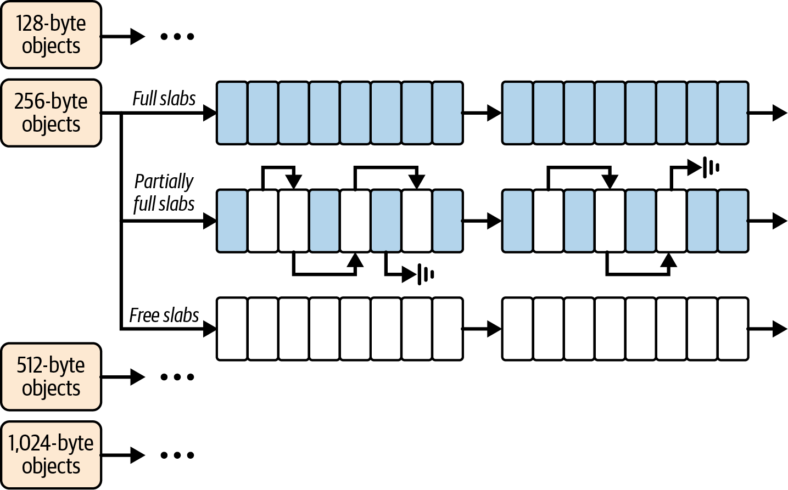
slab 分配器支持快速复用，并可避免不同对象大小混用造成的碎片；伙伴分配器处理粗粒度的页分配，slab 分配器则优化细粒度对象的复用。
PyTorch 缓存分配器对许多负载表现良好。然而，当大、小分配交替且模式差异很大时，可能出现碎片。处理不同类型请求的长运行服务器中，碎片可能逐渐积累。
此时虽然有大量空闲内存，却不够连续，无法满足大张量分配；即使从技术上看仍有可用内存，也可能导致 OOM。
PyTorch 提供 torch.cuda.memory_summary() 以协助评估内存使用情况，也在 torch.profiler 中提供内存分析（profile_memory=True）。可借此确定大量分配内存的操作。此外，NVIDIA Nsight Systems 可在时间线上跟踪 CUDA 内存事件和统一内存缺页，Nsight Compute 则提供内存工作负载分析。
这些工具结合起来，可观察分配行为和碎片效应随时间的变化。可在开发和测试阶段使用它们来制定内存分配器调优策略，包括接下来讨论的动态策略。
减少内存碎片的一种粗暴方法是定期重置分配器状态。另一种做法是使用 CUDA 流序缓存分配器 cudaMallocAsync，它会在内部按一定限制以内的分配大小分箱；slab 分配则更进一步，完全不混合大小。
cudaMallocAsync 在某些方面类似结合了 slab 与伙伴系统的机制，并由 CUDA 驱动管理。这可能以较低的自定义工作量获得部分自定义分配器收益，但并非无条件优于其他后端，须针对实际负载测量。
具体而言，cudaMallocAsync 使用流序内存池，在内存引用释放后自动复用内存；由于它知道内存释放的依赖顺序，可在后台处理已释放块。其行为和收益会因 CUDA 版本、工作负载和流同步模式而异。
在 PyTorch 中，分配器后端及配置键是否可用取决于 PyTorch 与 CUDA 版本。max_split_size_mb 属于原生缓存分配器的配置项；使用 backend:cudaMallocAsync 时，它通常不是可动态调节的等价控制项。应查阅目标版本的 PYTORCH_ALLOC_CONF 文档并实测验证。
例如，动态系统可能在预计出现大分配时调整原生缓存分配器的分割策略，以降低大块被切成小块的概率；处理许多小请求时又可能采用不同阈值以提高复用率。此类更改一般必须在 CUDA 初始化前生效，而不是在正在运行的 Python 进程中即时切换。
过小的分割大小会使分配器充满许多微小块，增加元数据开销和潜在碎片；过大的分割大小会减少块数及元数据，但若只释放块的一部分，可能留下无法利用的较大“空洞”。
设想服务检测到碎片，例如 PyTorch 内存快照显示了由碎片形成的空洞。在这种情况下，系统可在新启动的工作进程中尝试 cudaMallocAsync 后端，它可能改善某些负载的内存池复用；不能假定其一定会合并或消除现有进程中的碎片。
应使用内存监控工具跟踪并记录内存碎片。例如在 PyTorch 中，可使用 torch.cuda.memory_reserved() 和 torch.cuda.memory_allocated()：前者是分配器保留的 GPU 内存总量，后者是其中实际被张量使用的量。
保留量与已分配量之间很大的差距可能表示未使用缓存块较多，但不能仅凭该差距断定碎片。若差距随时间增长，可考虑定期清空缓存，将未使用块交还给驱动，或重启工作进程以完全重置分配器；这些方法具有侵入性，虽有时用于碎片严重的长运行生产进程。
清空和重启等侵入性“去碎片”方法应仅在维护窗口使用，或在整个集群中滚动重启以避免停机。若必须依赖这些破坏性机制，通常意味着还有需要定位和优化的更深层问题。
例如，要在 PyTorch 中实现动态分配策略，可先使用默认的原生分配器；发生 OOM 时，再在使用 cudaMallocAsync 后端的新进程中重试。
遗憾的是，首次导入 torch 或首次触及 CUDA 上下文时，CUDA 缓存分配器便已创建。Python 的 importlib.reload 不会卸载 C++ 扩展或销毁分配器。因此，运行中修改 PYTORCH_ALLOC_CONF（旧称 PYTORCH_CUDA_ALLOC_CONF）后重新加载 Python 模块，并不能在进程内重新配置分配器。
不过，可派生一个新进程，在导入 torch 前设置环境变量。下方示例捕获 OOM，在父进程释放可释放内存后，用设置好 PYTORCH_ALLOC_CONF 的干净子进程重试。该方法展示如何以不同分配器后端设置 backend:cudaMallocAsync 并重新运行相同调用；它较为权宜且代价高，下面是捕获 torch.cuda.OutOfMemoryError 时实施该策略的 PyTorch 示例：
# dynamic_memory_allocator.py# Retry generation in fresh process with cudaMallocAsync if first attempt OOMs.# This is the only reliable way to change the CUDA allocator at runtime.importosimportsysimportgcimportpickleimporttempfileimportsubprocessimportimportlibfromtypingimportCallable,Anydef_resolve_factory(factory_path:str)->Callable[[],Any]:"""Resolves a factory string like "my_package.my_mod:build_model" to a callable.The callable must return ready-to-use model with .generate(request) method."""module_name,func_name=factory_path.split(":",1)module=importlib.import_module(module_name)# safe to import, no torch yetreturngetattr(module,func_name)defgenerate_with_allocator_retry(model_factory_path:str,request_object:Any,*,allocator_conf:str="backend:cudaMallocAsync")->Any:"""Attempts model.generate(request_object) in the current process.On torch.cuda.OutOfMemoryError, retries in a fresh subprocess withPYTORCH_ALLOC_CONF set to allocator_conf. request_object and thereturned value must be picklable."""# Import torch only inside function; avoid importing at module import time.importtorchmodel_factory=_resolve_factory(model_factory_path)model=model_factory()# user-supplied function builds model, moves to GPUtry:# First attempt uses whatever allocator current process started with.returnmodel.generate(request_object)excepttorch.cuda.OutOfMemoryError:# Free as much as possible in the parent before spawning the child.# Avoids compounding pressure when two processes momentarily overlap.try:delmodelfinally:gc.collect()torch.cuda.empty_cache()# Serialize request to temp file and ask fresh interpreter to do work.withtempfile.TemporaryDirectory()astd:req_path=os.path.join(td,"request.pkl")out_path=os.path.join(td,"output.pkl")withopen(req_path,"wb")asf:pickle.dump(request_object,f)# In the child, we want torch to see allocator config at import.env=os.environ.copy()env["PYTORCH_ALLOC_CONF"]=allocator_conf# Re-run this module as a helper child. The child will import torch# only after PYTORCH_ALLOC_CONF is set in its environment.cmd=[sys.executable,__file__,"--child","--factory",model_factory_path,"--request",req_path,"--output",out_path,]completed=subprocess.run(cmd,env=env,capture_output=True,text=True)ifcompleted.returncode!=0:# Bubble up child stderr to aid debuggingraiseRuntimeError(f"Retry failed with exit code{completed.returncode}\n"f"stdout:\n{completed.stdout}\n\nstderr:\n{completed.stderr}")withopen(out_path,"rb")asf:returnpickle.load(f)def_child_main(factory_path:str,request_path:str,output_path:str)->None:"""Child entrypoint: assumes PYTORCH_ALLOC_CONF is already present in env.Imports torch only now, builds the model, runs generate, and pickles result."""# Import torch after env var set by the parent’s subprocess.run(env=...).importtorchmodel_factory=_resolve_factory(factory_path)model=model_factory()# build the model inside the child processwithopen(request_path,"rb")asf:request_object=pickle.load(f)if__name__=="__main__":importargparseparser=argparse.ArgumentParser()parser.add_argument("--child",action="store_true")parser.add_argument("--factory",type=str,default="")parser.add_argument("--request",type=str,default="")parser.add_argument("--output",type=str,default="")args=parser.parse_args()ifargs.child:_child_main(args.factory,args.request,args.output)else:("This module is intended to be imported.")
这里通过工厂函数在子进程构造模型，确保 PYTORCH_ALLOC_CONF 环境变量生效前不导入任何 CUDA 相关内容。代码使用 torch.cuda.empty_cache() 清空未使用的缓存块并将其交还给驱动。该模式保证子进程导入 torch 前已应用分配器配置，也避免试图在运行时卸载 CPython 不支持卸载的原生扩展。注意，empty_cache() 不会释放仍被张量占用的显存，也不能修复真正的碎片；新进程重试开销很大，不应成为逐请求的常规策略。
在非 PyTorch 环境（例如基于 C++ 的 LLM 推理引擎）中，可实现能够按特定分配大小配置的纯 slab 分配器。此类分配器将内存预先划分为固定大小的“slab”，对重复的同尺寸分配非常高效；对该单一尺寸可显著减少碎片，但仍须处理不同尺寸、生命周期和总体内存利用率之间的权衡。
在 LLM 服务器中，一种常见思路是为每个 token 的中间缓冲区复用内存。例如生成一个 token 时，可能需要与该 token 激活相关的 [layers, hidden_dim] 张量。若此类分配每次大小都相同（如 64 KB），为该精确大小设置 slab 会很合适；实际张量形状与缓冲策略则因引擎实现而异。
系统若检测到反复分配大量 64 KB 张量，可建立由专用 64 KB 块组成的“slab”。slab 分配器通常在整个 slab 都释放后，才将内存归还通用池。
现代 LLM 推理引擎通常会对生成 token 所需的缓冲区做复用，而不是每次释放再重新分配；后者会带来很高开销，尤其在 token 粒度上。具体复用层级和实现因引擎而异。
分配器切换可能意味着为系统不同部分使用完全不同的分配策略。例如，模型权重在推理期间很少释放，可采用适合大型长期分配的缓存分配器；短生命周期的逐 token 分配则可使用自定义分配器或专用内存池。
建议在架构上将模型权重等长生命周期分配与 token 缓冲区等短生命周期分配分开，这样更容易将它们导向不同分配器和内存池。
应始终为 OOM 实现回退策略。许多生产系统采用多层内存：发生 GPU OOM 时，可将部分状态卸载到 CPU 后重试，而不是直接使请求失败。例如可释放未使用缓存、将部分层卸载到 CPU，或压缩缓存。每种方法都会在延迟、吞吐、质量与可靠性间取舍，必须与服务的 SLO 相匹配。
总之，动态分配器管理和多层内存等技术可帮助系统在不同类型负载下长期运行，同时降低碎片与分配延迟尖峰的风险。它是用户不直接看见的后台优化，却可能对长运行、大规模推理服务器的稳健性很重要；效果不应假定，需用目标环境的监控和压测验证。
在快速演进的 GPU 硬件和算法创新领域，新的、更快的内核实现不断涌现，包括 FlashAttention 的新变体、巨型内核（megakernel）和硬件专用的软件优化。
运行时内核补丁是指无需完整重新部署或重新加载模型，便可将这些新实现集成到正在运行的系统中。本质上，是在运行中将较慢的内核函数热替换为更快的函数。
设想推理服务器的多头注意力使用默认的 PyTorch 缩放点积注意力（SDPA）内核，随后发现 FlashAttention-3 一类的新内核实现在某些长序列场景可提升约 20% 的速度。该数字取决于硬件、形状、精度及实现版本，须在目标系统中复测。
传统做法是安装更新后的库并重启服务器来使用新实现；借助运行时补丁，则可在不中断服务的情况下动态加载新内核并将调用重定向到它。
对重启或模型重载会造成过高延迟、甚至中断的 24/7 服务而言，零停机升级很关键。在 Python 中，可像下面这样进行简单的 monkey patch：
importnew_flash_attn_lib# Monkey-patch the model's attention forward to use the new libraryold_attn_forward=model.transformer.self_attn.forwarddefnew_attn_forward(self,*args,**kwargs):returnnew_flash_attn_lib.forward(*args,**kwargs)model.transformer.self_attn.forward=new_attn_forward.__get__(model.transformer.self_attn,type(model.transformer.self_attn))
这段代码将注意力模块的 forward 方法替换为调用 new_flash_attn_lib.forward 的方法。通过绑定到实例（__get__）来模拟正确的方法绑定。补丁应用后，该注意力层的后续调用将转入新实现，因此实际上完成了内核的热替换。
务必确认 new_flash_attn_lib.forward() 可直接替换原实现，并经过充分测试，确保输出在可接受数值误差内一致，以避免模型质量回归。
另一种技术是 JIT 补丁：使用 PyTorch Inductor 或 OpenAI Triton 等即时编译器在运行时生成更快的内核，再接入推理流水线。如下可使用 PyTorch 的 torch.compile 优化函数并获得编译后的版本：
compiled_forward=torch.compile(model.transformer.self_attn.forward,backend="inductor")model.transformer.self_attn.forward=compiled_forward
此后每次调用 forward 都执行优化后的代码，其中可能融合多个操作等。若在模型初始化后执行，这就是一种热补丁，因为无需重新加载模型，只是替换函数引用。实际 torch.compile 可能带来编译延迟、图断裂或形状相关的重新编译，应预热并按真实输入分布验证。
在 CUDA 侧，可使用 CUDA Driver API 进行运行时模块加载。例如，为新内核编译自定义 PTX，并在不重置设备的情况下加载到上下文中。若函数签名匹配，系统可更新函数引用。NVIDIA Runtime Compilation（NVRTC）等工具能够在运行时从字符串编译 PTX，从而支持该工作流。
以 CUDA C++ 实现这一点较复杂。Python 的 monkey patch 或 PyTorch 可扩展后端等高层方案在长期内可能更实用、更易维护；但高性能推理引擎未必采用 Python/PyTorch 运行时。
进行此类热替换时，必须保证线程安全。例如，排空传入请求队列或使用屏障，确保没有其他线程正执行要替换的函数，以避免与运行中线程发生竞态。这类似操作系统内核加载模块：需要谨慎同步，但可避免完整重启。
使用定义清晰的模块边界（例如分离注意力和 MLP 内核）会更容易替换内部实现，因此模型代码宜保持较高模块化程度并提供这些替换点。单体模型实现更难打补丁，但可能性能更高，例如巨型内核。
当然，必须保证新内核产生与旧实现相同或足够接近的结果。优化内核通常设计为在相同精度（如 FP16）下数值等价，但并非保证；应进行正确性、稳定性与端到端质量验证。
热补丁也可用于快速修复。例如当前内核中特定操作序列触发已知 bug 时，可先快速补入修复，而不必等待完整更新。
例如，部署的 FP8 内核可能在未预料的边界输入上表现异常。若有更安全但稍慢的版本，可检测异常条件并在这些情况下热替换为安全内核。务必记录这些事件以便后续分析。
可采用分阶段发布：将少量流量路由到新内核（影子测试或金丝雀）。然后使用遥测数据与旧内核比较延迟、吞吐量和输出；新内核达到预期且结果正确后，再向全部用户发布。
为管理多个候选实现，引擎可维护注册表，例如 attention_impl = "fast" 或 "safe"，并据此分支。可将其实现为特性开关，无需改代码即可切换实现；这有利于通过改变开关快速回滚。要确保代码会主动读取特性开关系统的值，否则值静态不变，便失去开关意义。
设计良好的推理引擎还应测量新内核的运行时性能。若新内核在实际生产数据下不更快，便可回滚；原因可能是硬件略有不同、批次大小未经测试或负载条件不同。
这是上一节所述自动调优的一种形式。若自动调优器发现某实现超过阈值地优于当前默认实现，系统可触发“补丁”，将该更快实现提升为之后的默认选择。
这就闭合了自动调优器的循环：系统不仅动态找到更好的内核，也将其切换进来，形成自优化的内核选择机制。
还可将此策略与前述 RL 策略结合：同时加载多个实现，让 RL 智能体为不同类型请求选择其一。实际部署时需对选择器本身的开销、确定性与回滚路径施加约束。
注意在内存中维护多个实现的开销。额外代码体积不应将关键代码逐出指令缓存，也不应耗尽 GPU 内存。
例如，高度优化的内核可能最适合长序列，而更简单的实现对短序列已足够。运行时系统可按请求选择它们，相当于依据输入序列长度逐请求地打补丁。
总之，运行时内核补丁强调灵活性：今天最优的方案明天可能不再最优，而它提供了快速适应的手段，使服务基础设施跟上模型加速技术的快速发展。vLLM、SGLang、NVIDIA TensorRT-LLM 和 NVIDIA Dynamo 等推理引擎提供了不同程度的动态能力；例如 TensorRT-LLM 支持通过运行时插件加载优化内核。应根据所用版本的正式文档和兼容性限制利用这些能力。
在高吞吐量推理场景中，冷启动开销可能是请求—响应延迟的重要组成部分。第 12 章所述的 CUDA Graph 能够捕获一系列 GPU 操作，并以极小的启动开销重放该序列。
预热 CUDA Graph 是指在真正需要图之前先完成图的建立。若能预测某种请求类型或批次大小何时出现，预热好的 CUDA Graph 即可随时执行。
该技术依赖预测准确性。若预测不准，可能预热了不会被使用的图。应监控预测命中率，确认优化确实带来收益。
经预热后，请求实际到达时图可跳过昂贵的启动与初始化步骤。系统可使用 ARIMA、Prophet 等时间序列预测算法，预判未来工作负载模式（包括流量激增与批量大小变化），主动为快速执行准备图。
设想某推理服务观察到每日周期：由于时区相关流量模式，每天上午 9 点用户流量都会激增。了解这一规律后，系统可在 9 点前运行少量请求，以将模型载入 GPU 缓存、JIT 编译必要内核，并为预期批次大小捕获 CUDA Graph。9 点实际负载上升时，传入请求即可复用针对预期批次大小和使用模式的预热状态。
实践中，可由类似 cron 的作业或调度服务在预期流量激增前触发预热流程。务必为资源预配留出足够时间。
在 PyTorch 中，将模型计算包裹在 torch.cuda.graph() 上下文内，可捕获包含 GPU 内核启动的静态计算图。重放图时，PyTorch 绕过 Python 到 CUDA 的调度开销，并以一次 cudaGraphLaunch 提交整个工作负载。由于 CPU 参与极少，尤其对大型、重复的输入批次，这可能显著加快执行。
缺点是这些图是静态的，不易支持可变形状或长度。推理服务器却常因 GPU 内存限制和算法优化而处理离散的批次大小（1、2、4、8、16 等），这与图模型很契合。
为处理可变性，可为每个常用批次大小或序列长度维护预捕获图池，并通过持续预热策略准备这些图。例如高峰时段常见 16 个请求的批次，服务器可预先以批次大小 16 捕获模型前向传播图，再保存供后续使用。
下次同时到达 16 个请求时，推理系统将批处理输入送入预捕获图。图中的内核已经预热并针对图执行优化，无需逐个排队和启动许多操作，一次图启动即可完成。
请注意，图池中每个已捕获图的工作区都会额外占用 GPU 内存。存储许多图时应监控内存使用；内存紧张时可能需要从图池中逐出较少使用的图。
为避免图池带来的额外内存占用，可使用第 12 章讨论的图更新/补丁机制，对图节点做小幅尺寸调整。但实践中，预先捕获的图池往往有更可预测的性能；应权衡显存成本与命中率。
CUDA Graph 也能降低 CPU 开销：它只协调一次图启动，而不是协调许多单独的内核启动。这使 CPU 可以处理数据预处理等其他实际工作。
同样，可用 ARIMA、Prophet 等时间序列预测算法预测 RPS、平均提示词长度等指标。若模型预测批次大小将跃升，或将出现长输入序列等特定请求模式，系统可开始准备并预热相应的 CUDA Graph、缓存及其他资源。例如，主动调大连续批处理算法的批次上限、从磁盘预取模型权重到 GPU 内存，或分配额外 GPU 实例。预测与预热都应受到资源预算和限流保护。
应使用近期流量数据频繁重新训练和更新这些时间序列模型，因为新用户群体上线等因素会随时间改变使用模式。此外，意外的“假期”或活动也可能使负载曲线骤增。
与缓存和预热相关的另一点是预判 prefill 与 decode 工作器的扩容。若已知定时批处理任务或日报场景会在某时刻带来大量长提示词请求，系统可扩展 prefill 工作器，并以代表性样本数据执行前向传播，预热 CUDA Graph 和 KV 缓存。
扩容和预热事件也应覆盖 decode 工作器与 CUDA Graph。对于 decode，例如可预热并加载推测解码的草稿模型及其 KV 缓存到 GPU 内存。其他 decode 优化包括针对固定生成 token 数展开循环：普通解码为 1 个 token，推测解码时可能为多个 token。
还应考虑缓存 CUDA 内核本身。CUDA 通常会缓存已编译内核（C++ 代码 → PTX 指令 → SASS 汇编）以加快执行；内核首次运行时，可能产生即时 JIT 编译开销。
应将这种预热与集群自动扩缩容器协调：新 GPU 实例启动时，自动扩缩容器使用若干预热 API 调用执行快速推理。这会验证推理引擎、缓存 JIT 编译结果、分配内存池、准备 CUDA Graph 等，使引擎在加入实时流量池前达到可服务状态。
在受控预热阶段，应根据系统知识识别并调用尽可能多的不同路径，包括各种批次大小、CUDA Graph 变体等。
还应通过比较预测激增期间前几个请求在有、无预热时的延迟，监控预热是否真正有帮助，并按需调整时机和阈值。时间序列预测可能出错，务必确保预热任务在错误时间运行时不会影响整体推理性能。
例如，应尽量在 GPU 利用率较低时，以示例数据执行预热。CUDA 支持流优先级调度，可将预热流设置为低于推理流的优先级，使预热不与实时高流量请求竞争资源。
预热任务应使用低优先级 CUDA 流，以便在预热期间到达的高优先级实时流量能抢占资源。闲置 GPU 确实是可利用的机会，但只有不与真实工作冲突时，预热计算才近似“免费”。
Grace Blackwell 系统中 CPU 与 GPU 以较低延迟共享统一、一致性内存，因此可采用一些额外技巧。例如，可让 CPU 先将 GPU 计划使用的数据填充到统一内存，从而可能避免后续显式 GPU 拷贝；实际行为取决于内存放置、访问模式和平台软件栈。
由时间序列预测引导的持续预热可使延迟更可预测：推理引擎学习常见流量模式，自动准备数据和硬件，提前应对需求。它通过在可摊销的时段平滑编译、内存传输等昂贵操作，可能减少抖动与延迟尖峰。
这对一次性初始化成本很高的大模型尤为有价值。随着模型和上下文增长，自适应预加载在生产 LLM 系统中可能从“锦上添花”变成必需能力；但前提是预测质量、资源成本与用户体验收益均经过验证。
在第 16 章中，我们讨论了现代推理服务器如何使用不同的请求批处理方式（例如连续批处理），以最大化吞吐量并尽量降低所有请求的延迟。但批处理会增加单个请求的延迟。可通过自适应批处理技术，随一天中条件变化动态处理这种取舍。
自适应批处理会根据负载以及请求推进情况，动态调整请求如何分组为批次。这种动态策略可随环境变化实时调整批次大小和阈值参数。
例如，在峰值负载期间，吞吐量至关重要，系统可使用较大批次（如 8 或 16）；在低负载期间，系统可缩小批次，让请求更快得到服务，从而优先延迟而非吞吐量。
决定批次大小时，可采用简单启发式规则，例如：“GPU 利用率 > 80% 时允许更大批次；< 20% 时使用批次大小 1 以最小化延迟。”也可使用前文讨论的更复杂 RL 智能体或预测策略。固定百分比仅是起点，需结合排队时延、KV 容量与 SLO 校准。
prefill 与 decode 阶段的算术强度差异会导致执行时长不匹配。因此，通常最好将二者解耦，作为独立负载处理：单节点上可用独立线程/进程，多节点集群中可用独立工作器池，并分别调优。
通过解耦 prefill 与 decode，可把两个阶段看成独立操作，分别针对各自的计算和内存带宽需求优化，其中一项便是各阶段采用的批次大小。
实践中，vLLM 等现代推理引擎可为 prefill 和 decode 工作器形成独立批次，因此一批 prefill 请求可独立于一批 decode 请求执行。例如，decode 属于内存受限负载，较大批次可能提高算术强度；具体调度与解耦程度取决于引擎版本、部署架构和配置。
vLLM 等现代推理服务框架使用自适应调度循环，动态选择处理 prefill 批次还是 decode 批次。vLLM 支持分块预填充和以 decode 为优先的调度，以交错执行 prefill 与 decode 来提高利用率。这些技术可提升整体利用率和吞吐量，但对延迟的影响需随工作负载测量。
prefill 与 decode 的系统资源特性不匹配也会影响流水线并行（PP）。设想一个微批次对长序列执行 prefill，另一个微批次逐 token 执行 decode：二者持续时间不匹配，便会产生流水线气泡。
可将大型 prefill 请求切成小块，并在块之间捎带执行对延迟敏感的 decode 任务，使二者交错。这可保持各流水线阶段忙碌，并尽量减少 GPU 调度中的空闲“气泡”。
分块预填充（chunked prefill）是用于减少流水线气泡的常见模式。它将大任务（prefill）进行时间切片，为小任务（decode）在各分块制造的流水线间隙中执行腾出空间，如图 19-7所示。
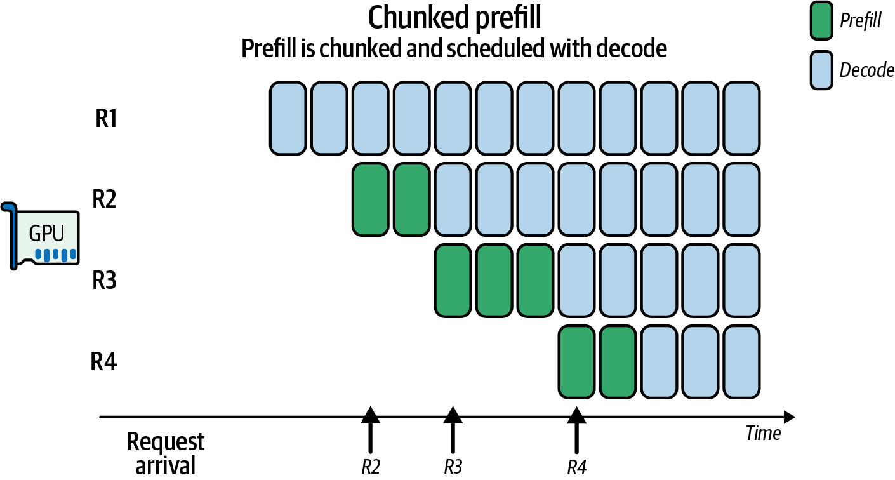
SARATHI 论文表明，相比朴素调度，这类分块 prefill 与捎带执行方式在其评测配置中可帮助确定合适的以 decode 为优先的批处理程度、减少气泡，并将吞吐量提高约 1.3–1.9 倍。SARATHI 名称指能聪明地同时驾驭 prefill 和 decode 任务的御者。
例如，考虑一个不使用分块的 10,000 token prefill 请求。单次 prefill 会阻塞整个流水线，使 decode 任务在 prefill 完成前排队。
若使用分块 prefill，将这个 10,000 token 请求分为五个 2,000 token 块，便可在 prefill 块之间交错执行 decode 批次，让 GPU 同时推进两个阶段。这有助于挤出流水线气泡、提高吞吐量并平滑 GPU 利用率。
经验法则是选择使一个 prefill 块耗时约 50–100 ms 的分块大小，从而能频繁在其间调度 decode 批次。对应的 token 数可能是数千，取决于模型架构/规模和 GPU 硬件；应以 SLO 和实际测量为准。
vLLM 等现代推理引擎会基于 GPU 利用率和队列状态，通过自适应调度循环决定处理下一个 prefill 块还是执行 decode 批次。vLLM 的调度器明确支持分块 prefill 和以 decode 为优先的批处理；其执行器及分块 prefill 功能旨在让大型 prefill 与较小的交互式 decode 重叠。
自适应调度器在选择分块 prefill 大小时，需要考虑 GPU 共享内存限制和占用率。下面给出一个简单的自适应分块 prefill 实现；该代码动态调整块大小，以保持 GPU 上较高的 SM 利用率和占用率：
# Example adaptive scheduler for chunked prefill/decodeimportcupyascpimporttorch# Hardware constraintsSHMEM_LIMIT=256*1024BLOCK_THREADS=256TARGET_UTIL=0.85OCC_THRESHOLD=0.5# Cache for occupancy results and tile lookup_occ_cache={}_tile_table={}# e.g., {L: optimal_T}# 1) Precompute tile_table offline; here we lazy-initialize on first usedefget_optimal_tile(L):ifLin_tile_table:return_tile_table[L]# compute block size by querying for an occupancy-based suggestionmin_grid,max_grid,block_size=...# left out for brevityT=min(block_size,L)T=max(32,(T//32)*32)_tile_table[L]=TreturnT# 2) Cached occupancy querydefget_occupancy(threads,shared_bytes):key=(threads,shared_bytes)ifkeyin_occ_cache:return_occ_cache[key]max_blocks=cp.cuda.runtime.\cudaOccupancyMaxActiveBlocksPerMultiprocessor(attention_kernel_ptr,threads,shared_bytes)props=torch.cuda.get_device_properties(0)warps_per_block=threads//props.warp_sizemax_warps=props.max_threads_per_multi_processor//props.warp_sizeocc=(max_blocks*warps_per_block)/max_warps_occ_cache[key]=occreturnoccdefscheduler_loop():stream=cp.cuda.Stream(non_blocking=True)whileTrue:pending=get_pending_requests()util=gpu_utilization()ifutil<TARGET_UTILandany(r.phase=='prefill'forrinpending):req=select_heaviest_prefill(pending)L=req.remaining_length()T=get_optimal_tile(L)shared_bytes=3*T*T*4occ=get_occupancy(BLOCK_THREADS,shared_bytes)ifocc<OCC_THRESHOLD:T=max(32,T//2)shared_bytes=3*T*T*4chunk=req.next_prefill_chunk(T)# Launch with CuPy RawKernel on our streamattention_kernel((...grid...),(BLOCK_THREADS,),(chunk,...),shared_mem=shared_bytes,stream=stream)# Record an event to know when doneevent=cp.cuda.Event()event.record(stream)elifany(r.phase=='decode'forrinpending):batch=form_decode_batch(pending,max_batch=16)# Trace the adaptive logiclogger.info(f"T={T}, occ={occ:.2f},util={util:.2f}")launch_decode_kernel(batch,stream=stream)event=cp.cuda.Event()event.record(stream)else:# Poll the last event rather than sleepifnotevent.query():cp.cuda.get_current_stream().synchronize()# or passcontinue
这里，调度器调整分块大小，以尽可能使用共享内存，同时不牺牲并行度。
具体而言，调度器先计算 tile 宽度 T，使查询、键和值的三个共享内存缓冲区（代码将每个简化为需要 T x T 个浮点数）能放入 GPU 每个 SM 的动态共享内存上限。随后调用 CuPy API（Python），测量该 T 下每个 SM 可并发运行的线程块数。真实注意力内核的共享内存需求取决于 head dimension、布局、流水方式和内核实现，不能由此简化模型直接推断。
若占用率低于设定的 50% 阈值，便将 T 减半，释放共享内存以便更多线程块共驻，从而在数据复用（较少 DRAM 载入）与并行度之间取得平衡。
当整体 GPU 利用率低于 85% 且存在待处理 prefill 工作时，调度器选择剩余量最大的 prefill 请求，将其分成每块 T 个 token 的等长块，使每个块能通过流水线而不独占所有阶段。
辅助函数 next_prefill_chunk 不固定块大小，而是根据实时指标即时调整 T：占用率低时缩小块，DRAM 流量过大时增大块。实际策略需要同时考虑排队延迟、KV 容量、内核形状与 SLO，而不是仅依赖这些阈值。
务必为调度器埋点，记录所选 T 及得到的占用率/利用率，以分析和验证这种自适应方法是否持续保持较高 GPU 利用率。
在 prefill 块之间，调度器可使用以 decode 为优先的批次，通过 form_decode_batch 将所有已就绪的 decode 请求合并为一次启动。这样，短小且对延迟敏感的 token 生成可利用本会闲置的流水线间隙；短提示词用户的 decode 无需等待巨型 prefill 完成。
调度器持续监控 gpu_utilization()，决定处理下一个 prefill 块还是清空 decode 队列。不论何种选择，它都尝试填满 SM 槽位并最小化空闲时间。这称为利用率最大化策略，类似以接近 100% CPU 利用率为目标的操作系统调度器；但服务系统还须明确限制尾延迟与公平性。
这些机制共同降低大上下文 prefill 作业饿死交互式 decode 的风险，同时让小型、延迟关键请求得到及时服务。在现代 GPU 上，这有助于获得较高吞吐量而不明显损害终端用户体验；实际效果取决于调度参数与负载组合。
分块 prefill 让工作与 GPU 优势相匹配：大型 prefill 矩阵运算被批处理，小型 decode 运算被交错执行，从而力求同时改善整体吞吐量和延迟。
如上所示，调度器监控实时指标并即时自适应。分块调度降低单个请求在不同条件下阻塞整个阶段的可能性，有助于保持 GPU 活跃并减少流水线气泡。
应将 prefill 与 decode 视作各自具有 SLA 的独立队列。通常可先用专用时间片或 CUDA 流处理延迟敏感的 decode 任务，再使用剩余周期处理大型 prefill 作业。例如，为 decode 任务分配一定时间预算（如每次 decode 1–5 ms），使其得到更及时的关注；具体值需按模型和 SLO 调整。
优先处理面向用户的实时 decode 可降低感知到的推理滞后；同时，系统有剩余容量时仍可持续构建批量上下文。
许多高性能推理引擎采用生产者—消费者模型，为不同阶段使用独立线程。例如，vLLM 通过多线程让一个线程准备 decode 输入，另一个准备新的 prefill 等，再以优化顺序送入执行流。这是有效重叠工作的成熟模式，具体内部实现随版本变化。
如果有多个节点，可将 prefill 请求发送到一组节点，将 decode 请求发送到另一组。此时 prefill 和 decode 节点可采用针对各自任务专门选择的异构硬件。
例如，prefill 阶段往往更偏计算受限，计算节点可使用高 FLOPS 的 GPU；decode 往往更偏内存带宽受限，节点可能更受益于较高内存带宽。实际瓶颈会随模型、批量、上下文长度和并行策略改变。
需要注意，异构的 prefill/decode 工作器配置虽可能节约成本，却会使动态负载均衡更复杂、甚至受限。若 prefill/decode 比例意外改变，更多 prefill 工作不得不在为 decode 优化（FLOPS 较低）的工作器上执行，这些工作器可能成为瓶颈。
使用同构节点会简化调度。只有在负载比例可预测且系统能应对负载变化时，才适合进行硬件专用化；但资本投入、快速演进的 GPU 架构和成本预算未必允许这样做。
对于 prefill 与 decode 批处理，建议尽可能将 decode 调用合批，以最大化 GPU 吞吐量并减少启动开销。对于 prefill，应避免在同一批中混合极短和极长的提示词。
应采用按长度分桶，使每个批次具有相近序列长度。例如，形成批次前将传入请求归入最近的 512-token 桶，便可避免在过多填充上浪费计算。
实践中，大多数现代推理引擎实现 token 级调度器，在每一步生成时动态形成批次：它会等待数毫秒收集就绪 token，限制批次大小以符合内存和占用率约束，并使用轮转/最大延迟规则改善长、短提示词之间的公平性。应确认推理引擎配置中已启用所需功能。
总之，自适应批处理和 prefill/decode 解耦可提高 GPU 利用率与吞吐量，而不必牺牲过多延迟。它们也可能改善总体延迟，因为 GPU 空闲时间更少通常意味着任务整体更快完成；不过仍需分别监控 TTFT、ITL、尾延迟和公平性。
Grace Blackwell GB200 NVL72（72 个 Blackwell B200 GPU、每个 180 GB HBM）和较新的 Grace Blackwell Ultra GB300 NVL72（72 个 B300 GPU、每个 288 GB）等现代多 GPU、多机架系统，使用单一高带宽 NVLink/NVSwitch 网络结构连接 72 个 GPU。此类架构形成统一的 72-GPU 域，单 GPU 聚合双向 NVLink 吞吐最高约 1.8 TB/s，NVSwitch 网络横截面聚合带宽超过 130 TB/s。具体规格应以所用系统、产品版本和 NVIDIA 官方资料为准。
不过，大规模推理要达到峰值性能，原始带宽还不够，还需要智能、自适应的通信调度。如图 19-8所示，拥塞感知和拓扑感知策略使数据传输能够实时避开瓶颈。
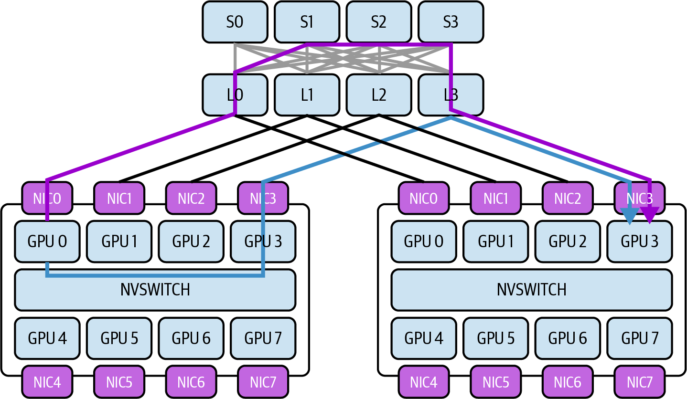
为处理这些瓶颈，下面讨论链路利用率遥测、动态消息路由和集合通信的波次调度。这些原则和技术可在保持低延迟、高吞吐量的同时，高效调度 GPU 间通信。为使讨论具体化，以下以 NVL72 机架环境为例。
NVLink 在 GPU 之间，以及 Grace Blackwell Superchip 模块中 GPU 与 Grace CPU 之间提供高速点对点链路。NVSwitch 充当机架内网络交换机，将所有 GPU 连接为全互连拓扑。
在 NVL72 机架系统中，每个 GPU 配有多个接入一组 NVSwitch 芯片的 NVLink 端口（例如每 GPU 18 条 NVLink 链路）。该设计提供 GPU 对等连接，使任一 GPU 都可通过 NVSwitch 网络一次跳转/遍历到达其他 GPU。这样的拓扑使 72 个 GPU 可表现得像一块具有均匀连接的大型板卡。
聚合容量仍受每端口和每交换机限制；因此多对一流量模式可能使入口超额订阅。
尽管带宽很高，互连仍有有限容量。按该书所述规格，每个 NVLink 5 端口提供 100 GB/s 双向带宽（每方向 50 GB/s），每个 GB200/GB300 Superchip 为每 GPU 提供 18 个 NVLink 端口，单 GPU 双向吞吐最高 1.8 TB/s、每 Superchip 最高 3.6 TB/s。平衡负载下 NVSwitch 提供无阻塞全互连；但所有 GPU 向同一 GPU 发送等模式仍可能使链路超额订阅，因为每个 NVSwitch 芯片的总交换吞吐量有限。
过多 GPU 同时经同一交换机发送数据，或同时发往同一目的地时会发生拥塞，队列积累、有效传输吞吐下降。例如单个 GPU 理论上可实现 1.8 TB/s 双向通信，但多个对端同时瞄准该 GPU 时必须共享其 NVLink 入站带宽。同样，即使 NVSwitch 为平衡负载设计为全无阻塞，所有 GPU 同时交换数据等通信模式也可能造成超额订阅。
理解拓扑（哪些 GPU 共享 NVSwitch 组件或 NVLink 路径）对推理性能至关重要。在更小尺度上，同一板卡或托盘内的 GPU 相比不同托盘或跨节点 GPU，通常路径更快、更直接；务必依照实际机器拓扑验证。
避免凭空假设拓扑。使用 CUDA 的拓扑 API 和 NCCL 的拓扑提示以程序方式取得信息；可通过 NVML、DCGM 查询每个 NVLink 端口的计数器和远端端点，必要时结合 Fabric Manager 或 NVSwitch 工具完成交换机级映射。
在更大尺度上，跨节点/机架边界、离开 NVLink 域并使用 InfiniBand/Ethernet 的通信，比 NVL72 内部传输具有更高延迟和更低带宽。例如，InfiniBand NDR 每跳可能增加 5–10 µs 延迟，而 NVSwitch 跳转可能低于 1 µs；实际延迟与网卡、交换机、布线、负载和测量方法有关。
物理拓扑使部分通信路径比其他路径代价更低。拥塞感知调度器利用这一知识，优先选择更高带宽、更低延迟、拥塞更少的链路，以最大化性能。
要管理拥塞，系统必须先观测它。NVIDIA 提供接口以实时监控链路利用率。NVIDIA Management Library（NVML）及具体的 nvmlDeviceGetNvLinkUtilizationCounter 可暴露 NVLink 的逐链路吞吐量计数器和利用率统计；可用指标和 API 支持取决于硬件、驱动与 NVML 版本。
启用 NVLink 计数器会引入开销。应采用合理的采样间隔，避免“监控性能”本身影响性能。
自适应推理服务系统可查询每个 NVLink 端口传输字节数、错误率、特定 GPU 对之间的流量负载等指标。例如，可通过 NVML 或 DCGM 查询吞吐量计数器、带宽统计及其他遥测数据（如错误）。nvidia-smi nvlink --status 提供链路健康状态和配置；对于吞吐量等性能计数器，NVML 和 DCGM 通常是更合适的机制。
这有助于识别接近 100% 利用率而其他链路却未充分使用的热点链路。这些低层硬件计数器让调度器定位瓶颈出现的位置，包括特定 NVSwitch 上行链路或特定两个 GPU 间的链路。
除 NVML 外，Nsight Systems 等高级分析工具提供 GPU 活动（包括通信事件）的时间线视图。Nsight 可显示 NVLink/NVSwitch 上的数据传输何时发生及其耗时。
使用 Nsight Systems 对推理运行进行插桩，可视化多个传输是否重叠并造成延迟，或某些阶段是否等待通信。例如时间线可能显示，所有流水线阶段都在同一时刻通过同一链路发送激活，从而压垮互连。
建议使用 Prometheus 与 DCGM exporter 将这些指标集成到 Grafana 监控仪表盘中，以实时和历史方式查看链路利用率。识别到同步点等热点后，系统可插入轻微延迟、重新调度任务，或重新分配 GPU 角色，以缓解热点并平滑流量。
例如，系统可通过插入轻微延迟或以不同方式重叠工作来降低争用。实时遥测支持动态、自适应、反馈驱动的决策；如下节所述，调度器可对链路利用率尖峰即时作出反应，重路由流量或将任务重新调度到其他 GPU。
一种强有力的策略是按拓扑放置计算进程，使大量通信尽量不跨越缓慢或拥塞的链路。例如，在不同 LLM 层（“进程”）驻留在不同 GPU 的多 GPU 推理流水线中，大型中间张量必须沿推理流水线传递。
这本质上是进程—GPU 放置优化问题：要将神经网络模型层的图映射到通信成本最小的 GPU 硬件上。若层/进程到 GPU 的初始分配过于朴素，这些张量可能经过长距离、代价高且拥塞的路径，包括多次 NVSwitch 跳转，甚至离开 NVLink 网络到另一机架或数据中心，从而降低吞吐量和整体性能。
采用自适应进程—GPU 映射时，系统动态分配进程到 GPU，使通信尽可能本地化且平衡。例如，将 LLM 层（进程）划分到 NVL72 机架的多个 GPU 后，若 GPU 0 上的层/进程 0 向 GPU 2 上的层/进程 2 供给数据，但两块 GPU 位于 NVSwitch 网络的相对两端，数据必须经过更多链路。此时，如图 19-9所示，将层/进程 2 移至 GPU 1 是更优映射；图示采用 NVIDIA Topology-Aware GPU Selection（NVTAGS）系统的语境。
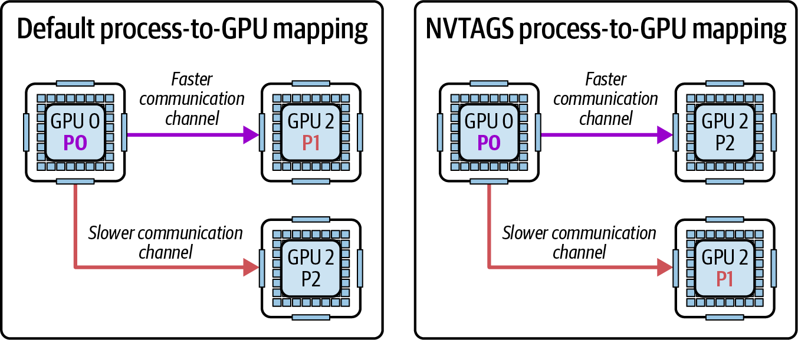
这里，NVTAGS 根据 GPU 间通信模式自动为进程分配 GPU 亲和性。NVTAGS 是 NVIDIA 的拓扑感知 GPU 选择框架，利用网络距离和链路指标自动完成进程—GPU 映射；它分析拓扑，并将进程分配到相互链路最快的 GPU。可用性与具体行为应以所用 NVTAGS 版本文档为准。
例如，若遥测显示该链路因激活张量很大而趋于饱和，调度器可将进程 2 重映射到与 GPU 0“更近”的 GPU，理想情况下该 GPU 共享高带宽连接或位于同一 NVSwitch 模块。对 LLM 推理而言，这种自适应重映射会动态重分配哪个 GPU 承载哪个模型层。
作为起点，若未使用 NVTAGS，可利用系统拓扑图识别在网络拓扑语境下哪些 GPU 分组“更近”。
这种重映射可在初始化时及两次推理之间进行。有些系统通过预先或周期性分析运行确定最优放置。若两个进程每秒交换数十 GB 数据，可能时应放在同一节点；反之，计算受限或相互数据传输很少的进程可以容忍更远距离。
当系统监控性能并随条件变化迭代改进映射时，重映射就是自适应的。例如，若一次运行后发现最高流量连接位于不同节点上的进程 3 与进程 4 之间，调度器可将其中一个进程与同节点的另一进程交换，使 3 与 4 聚在一起。
自适应重映射的结果是会响应已观测流量模式而演进的 GPU 分配方案。通过将数据交换限制在本地域，它可直接减少跨节点流量。
例如，重映射后原先 50 GB/s 的跨节点传输可能变为两条 25 GB/s 的节点内传输。这可能消除网络瓶颈并降低该通信的网络延迟，但绝不能一般性地保证“降低 50%”；收益取决于路径、重映射成本和并发流量。
可将重映射表述为使用图划分算法的优化问题：图的边权为链路上传输的数据量，求解最小割或包含容量、内存及计算约束的变体。
注意，移动层/进程意味着移动模型权重。若模型层包含数 GB 数据，不宜频繁执行。最好在大批次之间执行，或在映射至少会保持相对稳定一段时间时应用该策略。
在深度学习推理中，可将自适应映射思想应用到流水线、张量和专家并行技术的 GPU 间通信中。彼此通信最频繁的 GPU 应尽量通过最强、最不拥塞的连接相连。
NVIDIA Collective Communications Library（NCCL）是管理 GPU 集合通信的标准库，提供适用于多 GPU 环境的多种算法和优化。
许多推理负载涉及集合通信模式，例如汇集多个专家输出、广播参数或执行 all-reduce，如图 19-10所示。此处 NCCL 通信（流 1）与 GEMM 计算（流 0）重叠。
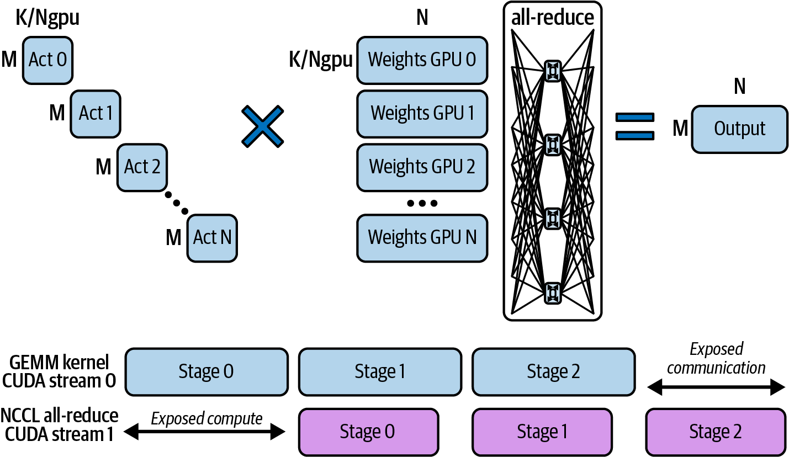
在拥塞感知环境中，调度器可动态应用这些 NCCL 优化。根据拓扑和拥塞信息选择合适的集合通信算法并调优，能降低推理系统的通信开销。下面是调度器即时调优 NCCL 时可考虑的要点。
NCCL 可使用环形或树形算法执行归约及其他集合通信。在环形 all-reduce 中，每个 GPU 沿闭环传递数据，使每一部分数据依次经过所有 GPU。
环形方法通过保持所有链路忙碌，可能最大化 NVLink/NVSwitch 上的带宽利用率，但其延迟随 GPU 数量线性增长。例如，在 72-GPU 环中，完成一次归约的数据需要 71 跳。
相反，树形算法以对数方式归约或广播数据：GPU 被组织为逻辑二叉树，每一步参与者数量减半。但 GPU 的物理连接是逐链路的，可在逻辑上视为树链。图 19-11比较了 GPU 间的树形和环形通信。
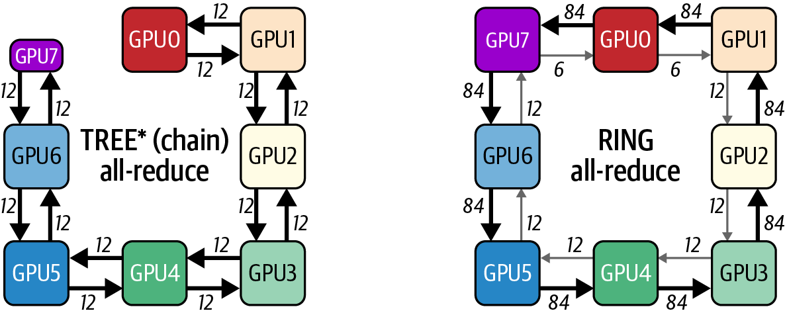
实践中，在树形 all-reduce 中，GPU 会先在每个节点内以简单 NVLink/NVSwitch“链”连接；跨节点时，以流水化的双二叉树拓扑连接。这使树形算法具有 O(log N) 级别的通信步数/延迟特征；具体 NCCL 算法与拓扑由版本、消息大小和系统配置决定。
树形算法以更少步骤完成（对于 72 个参与者，约为 log₂(72)），可降低延迟，尤其适用于跨大量 GPU 的“长途”传输。树可利用 NVSwitch 的并行性，使多个独立归约流同时沿不同分支进行。代价是树未必在每一刻都充分饱和每条链路的带宽，但它避免长环路径使某一链路或 GPU 成为瓶颈。
对于小消息、延迟敏感的归约，树形算法通常更有优势；对于带宽主导的极大消息，网络未拥塞时环形算法通常更好。应按消息大小和拓扑选择，并考虑分层方案；以基准测试而非固定规则为准。
默认情况下，NCCL 会根据消息大小和拓扑以启发式方式选择环形、树形或分层变体。在基于 NVSwitch 的节点内路径上，环形算法常因带宽而被采用；跨节点时则常见分层和树形变体。即使在 NVL72 一类全连接单节点 NVSwitch 系统上，也不应一概强制树形处理大归约，应让 NCCL 默认选择或对候选算法进行实测比较。
例如，可用 NCCL_ALGO 环境变量请求使用树形算法，以避免单一 NVL72 机架中所有数据都经由跨 72 个 GPU 的长环路径，从而在某些负载下降低拥塞。树的约 6 个对数级步骤与环的 71 个顺序步骤不能直接等同于端到端耗时，因每步传输量、流水、通道数和链路利用率不同；必须测量后再强制设置。
调度器可使用动态 NCCL 调优参数，显式选择最适合当前拓扑和消息大小的算法。例如，GPU 数量很大时，可评估树形 all-reduce 以避免每次更新都环绕整个集群。
例如，当因简单且带宽效率高而选择环形算法时，一个担忧是相同链路可能持续承载最重负载，尤其是环回绕处特定 GPU 对之间的链路。
一种拥塞感知方法是在不同迭代或集合通信操作间轮换环的顺序。通过周期性改变哪一 GPU 是环的起点、以及哪些 GPU 对先通信，可将通信负载更均匀地分布到各条 NVLink 连接上。
NCCL 的“inside/outside”环机制已在连续调用间交替环方向；若负载持续不平衡，在步骤间进一步打乱 rank 可能有帮助，从而降低某条 NVLink 长期成为瓶颈的风险。具体行为依 NCCL 版本、算法和拓扑而定。
实践中，NCCL 的交替环机制可在内部实现此类轮换；也可由调度器针对不同集合通信，在通信器中重新编号 GPU。为此可周期性地以置换后的 rank 顺序调用 ncclCommInitRank。这样长期来看，没有单条链路或单个 GPU 总是每次集合通信的关键路径，从而平滑利用率；但重建通信器存在同步与初始化开销，不能频繁用于热路径。
波次调度不一次启动使用全部 GPU 的巨大集合通信操作，而是将通信拆分为分阶段的波次，以减少瞬时负载。例如，设想推理负载需在 72 个 GPU 间交换 embedding；这是 MoE 或某些集成方法中常见的 all-to-all 模式。
若把此交换作为单一整体步骤，每个 GPU 会同时向其他 71 个 GPU 发送数据，即 72 个 GPU × 71 条消息同时饱和各链路与 NVSwitch 端口。
72 个 GPU 同时交换会产生尖峰。可改为拆成 4 组、每组 18 个 GPU 的波次，以平滑流量。
这称为波次调度：将交换组织为一系列较小的 all-to-all，每个波次只使用部分 GPU；也可对更小的数据块做流水，使任一时刻只有部分流量在传输中。
用 NCCL 的术语说，这可能对应于在内部将一个大型 all-reduce 拆成多个切片。NCCL 确实会自动这样做，以便通过环形路径流水化数据；调度器也可使用 NCCL 编排一系列较小的集合通信。
错开各通信波的启动时间后，在下一波增加流量前，前一波的数据已部分通过网络结构，从而为网络留出余量。这称为时间复用，可避免 NVSwitch 网络过载；概念上类似对网络流量做节流以避免突发。
另一示例是重叠计算与通信。若按波次归约层输出，系统可让下一层计算与归约的后续波次重叠。
这在计算与通信间形成流水线：部分 GPU 正完成归约时，其他 GPU 已开始下一层计算。这种重叠实质上将部分通信移到计算单元原本可能空闲的时间，从而在不出现导致拥塞的巨大一次性尖峰时提高 NVLink 带宽利用率。
重要的是仔细优化集合通信、选择正确算法，并将通信组织为均衡波次。这对拓扑感知调度至关重要，有助于所有 GPU 更高效、公平、均衡地使用 NVLink/NVSwitch 网络。
扩展到单一节点（如 NVL72 机架）之外时，会出现更多挑战，因为通信须经过相对较慢的 InfiniBand、Ethernet 等网络接口。此时 NVLink 和 NVSwitch 不再直接连接系统中所有 GPU；不同节点的 GPU 使用网卡和网络交换机交换数据。
为在多节点、多机架环境保持高性能，现代 AI 系统使用 GPUDirect RDMA。如第 4 章所述，GPUDirect RDMA 可让 GPU 直接向远程 GPU 内存发送/接收数据，而无需主机 CPU 参与，如图 19-12所示。
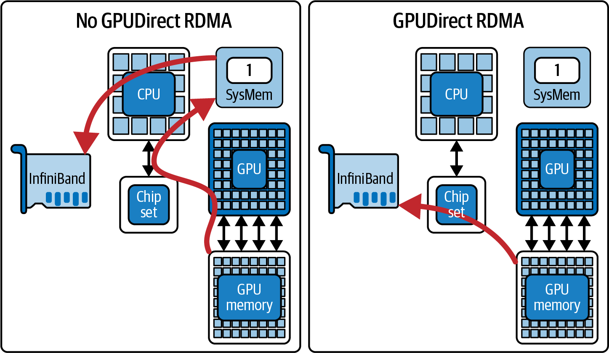
即便 RDMA 效率很高，网络带宽通常仍低于、延迟仍高于节点内 NVLink。若没有动态自适应路由调度，集群网络结构中的拥塞会成为限制因素。前文所述的拥塞感知调度器除节点内流量外，也可智能路由并均衡节点间流量。
一项关键技术是利用多个网络接口，即多轨（multirail）。高端 GPU 服务器常有多个 NIC，例如每节点双 InfiniBand 端口，某些设计甚至每 GPU 一个 NIC。相对于单 NIC，每节点使用两个 NIC 的吞吐量在合适的多轨拓扑中可能接近翻倍；多 NIC 也有开销，实际增益须测量。
NCCL 支持使用多个 NIC 并行增加带宽，并可在这些 NIC 间拆分环和树。拓扑感知在此至关重要：如果每个 NIC 连接不同网络交换机，形成集群网络中独立“轨道”，每次集合通信使用多个 NIC 可降低任一网络路径的负载。
NCCL 环境变量 NCCL_CROSS_NIC 控制一次集合通信是否可在不同节点的同一环/树上使用不同 NIC。在设计良好的网络拓扑中启用它时，NCCL 可能将一部分 GPU 数据经 NIC1 发送，另一部分经 NIC2 发送，从而增加带宽并缓解单链路瓶颈；并不保证吞吐量恰好翻倍。
若 GPU 节点有多个 NIC，且所用 NCCL 版本支持 NCCL_CROSS_NIC，可在为多轨设计的拓扑上对大型集合通信启用它，使流量跨轨道条带化；先验证性能与网络设计是否匹配。
调度器可检测某个 NIC 或路径是否接近容量上限。若接近上限，可在具备可用替代接口或路由时，将部分 GPU 通信迁移过去重新分配流量。网络层自适应路由可进一步改善这一点；应用也可将特定 GPU 流量固定到利用率较低的 NIC。如何把 NCCL 通道映射到 NIC 取决于 NCCL 版本、拓扑文件及环境变量，并非简单设置即可安全完成。
在多节点环境中，重路由还意味着与网络的自适应路由功能协作。现代 InfiniBand 网络可将拥塞流自动移到网络结构中较不拥塞的路径。尽管由网络层处理，上层调度器仍可例如通过改变 GPU 传输使用的目标 IP/路由来影响它，或将传输拆成小块以便网络进行均衡。
此外，重要的是强制 NIC 亲和性：将每个 GPU 的通信绑定到最近的 NIC（如位于同一 PCIe 根复合体或同一 NVSwitch/CPU 复合体的 NIC），以减少本地争用。
要实施 GPU–NIC 亲和性，可使用 NVML 或 NCCL 映射 GPU ↔ NIC 的本地性。可向 NCCL 提供关联每个 GPU 与指定 NIC 的静态拓扑描述，使其遵守该映射（例如 GPU 0–3 ↔ NIC 0，GPU 4–7 ↔ NIC 1）。
设计良好的系统会对齐 GPU–NIC 配对，让每个 GPU 的数据以最短路径离开节点。若同一端口的多个重 GPU 流使某 NIC 拥塞，调度器可在下一轮通信时将一个 GPU 的流量重新分配到节点内另一端口。NCCL 自动调优会处理其中许多情况，但针对特定且持续的问题可能需要人工覆盖。
设想一个极端情况：大型、高负载推理集群托管巨型 MoE LLM。若系统调优不当，节点间大量通信会使网络成为主要瓶颈。
在这类极端情形中，调度器可决定在多个节点复制某些数据（如专家）以减少跨节点查询；也可分层执行操作，先在每个节点内聚合结果，再在节点间交换摘要，而非让所有 GPU 跨节点交换完整数据。
在多节点环境中，需要拥塞感知调度以避免任何单条网络链路饱和。这类调度要求审慎的路由/绑定决策、使用 GPUDirect RDMA 避免不必要的内存复制，并利用多轨 NIC 最大化带宽。
目标是将拓扑感知扩展到 NVSwitch 之外，理解集群网络完整拓扑（如 fat-tree、dragonfly 等），并让通信模式适应该拓扑。这样，即便在大规模 GPU 集群中，也能更均衡地编排节点间传输，降低单条慢链路拖慢整个分布式推理系统的风险。
大规模语言模型越来越多地采用 MoE 层，从而引入独特通信模式。在 MoE 模型中，神经网络的不同子集（即专家）驻留在不同 GPU；每个输入 token 被路由到少量专家网络处理。
例如，在推理中，这会产生 all-to-all 流量模式：token 被发送到承载所选专家的 GPU，再将结果汇集回来。若静态地朴素分配专家到 GPU，许多 token 经常路由到特定 GPU 的专家时，该 GPU 可能成为通信热点。若经常协作处理相似 token 的专家在拓扑中相距很远（例如一个在 GPU 0，另一个在网络另一侧 GPU 71），token 需要不断经过长路径。
专家重平衡是一种通过周期性调整每个专家所在 GPU 来本地化通信的策略。关键是利用工作负载中的偏斜或模式。例如，若专家 5 和专家 19 都接收同一批查询的片段，可能时将它们放在同一 GPU（或同一节点）是合理的，可减少这些操作的通信距离。
同样，若专家 7 非常热门并接收大量 token，其 GPU 可能承受大量入站流量。调度器可以把该专家移到通信较少的 GPU，或在系统允许时复制该专家以分摊负载。此类重平衡可在推理运行之间，或长运行服务的定期维护窗口进行。系统收集专家之间、或专家与专家门控节点之间的通信频率统计，再将专家重映射到可最小化高流量链路的 GPU。
实践中，实现 MoE 专家重平衡需要协调地重新分发模型参数，因为专家本质上是模型权重的子集。这是重操作，不应频繁执行；但偶发重平衡可能显著减少拥塞传输。
由于移动一个专家可能传输数 GB 权重，专家重平衡应在计划维护窗口进行。关键是利用记录的路由指标选择更好的运行时放置策略，同时计入迁移成本、KV/会话亲和性、容量和服务中断风险。
重平衡后，理想状态是每个 GPU 承载一组专家，使大多数 token 的路由停留在单 GPU 或至少本地 NVLink 组内；其余非本地通信更均匀地分散在 NVLink/NVSwitch 网络中，而非反复击中相同 GPU 对链路。
简言之，分散热门专家，并将经常相互通信的专家共置。
另一项相关优化是专家分桶或分组：将经常一起使用的专家安排到同一组 GPU（例如同一 NVSwitch 或同一服务器）上，以减少跨组流量。
调度器可将专家放置视为图划分问题。专家（或承载专家的 GPU）是图的节点，边权表示专家间以及路由器到专家的 token 流量。使用最小割划分图，尽量切过较少的重边。由此，MoE 通信成为拓扑感知的，遵循 NVLink/NVSwitch 边界，并将数据交换限制在这些边界内。实际方案还必须满足专家容量、负载均衡和模型精度约束。
MoE 专家重新分组是模型架构层面拥塞感知调度的例子：它调整工作负载以适应网络，而非调整网络以适应工作负载。
前述技术虽可在系统启动或设计阶段配置，最稳健、先进的系统还会使用动态调度来响应正在发生的拥塞。动态拥塞感知调度是指系统利用前述遥测持续监控网络状况，并实时调整任务或通信调度。
拥塞感知调度与路由有助于减少瓶颈，并在动态条件下保持较高性能。这类似网络层的动态分组路由，如图 19-13所示。
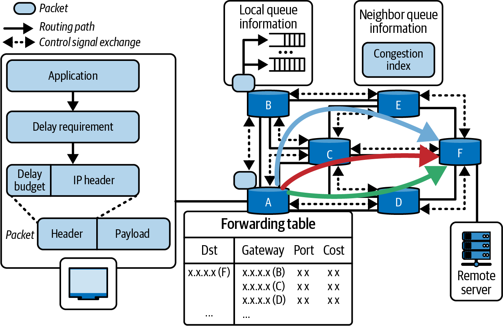
在多 GPU 推理中，动态策略包括依据拥塞反馈限流、重路由或重排操作。例如，调度器检测到连接两块特定 GPU 的 NVLink 0 号链路，正因大型流水线并行激活传输中的巨型张量而满载。
若另一个高优先级传输也计划使用同一链路，调度器可将第二个传输延后数毫秒，让第一个完成并清空队列。这称为时间负载均衡：插入微小间隔以防队列积累，类似网络交换机队列管理与 NIC 级反压。短暂排队往往优于过载，但具体策略须受应用 SLO、可靠性和传输语义约束。
反过来，若发现一个通常很大的传输因源 GPU 等待计算而空闲，调度器可利用该时间片经此链路发送较低优先级数据，填补空闲时间。这能利用可用带宽而不干扰关键数据传输。
另一种动态手段是软件层自适应路由：某路径拥塞时，若有替代路径则选择它。在具有多个 NVSwitch 平面或多个 NIC 轨道的网络中，自适应运行时可为下一次通信选择较空闲的平面。
多路径存在时 NCCL 会在内部处理部分此类工作，但高级调度器可维护映射到不同路径配置的多个 NCCL 通信器，再按拥塞情况从中选择。通信器创建、拓扑绑定和同步有成本，须避免在每个请求热路径中频繁更换。
动态选择替代路径要求调度器评估最佳路径；可借助不同虚拟通道，或由系统软件/硬件调节传输使用的 NVLink 路径。应用层通常不能任意选择单个 NVLink 端口，应依赖受支持的 NCCL、驱动与网络配置接口。
现代 NVSwitch 系统可能支持多个虚拟通道与硬件服务质量（HQOS）设置。若平台公开这些控制并已正确配置，调度器可将非紧急流量导向低优先级通道，以避免与紧急传输争用。
依赖负载的任务调度是动态拥塞管理的另一能力。若推理服务器处理许多共享资源的并发查询，调度器可暂时将部分查询排队或重排，以避免峰值重叠。这类似前文错开大型集合通信、避免它们同时运行的做法。
例如，调度器知道查询 A 下一步将涉及跨 GPU 的巨大 all-gather，又看到查询 B 刚开始且会同时加入另一个大型 all-gather。这时可短暂推迟启动查询 B 的该步骤，让查询 A 的通信在没有 B 的资源争用下完成。
这种细粒度调度可优化随时间变化的通信模式：重流被串行化或错开，而非并发启动；决策由最近遥测引导。若系统发现并行运行 8 个查询时 NVSwitch 利用率显著尖峰，可尝试第一波仅运行 4 个，紧接着再运行 4 个。系统因监控实时遥测并持续寻找避开拥塞的执行计划而具有自调优特性，但必须同时保持公平性和尾延迟护栏。
动态调度通常实现为监控所有 GPU 与网络链路的集中式调度器。它还可结合分布式协议：目的 GPU 的接收能力受限时，GPU 间互相发出拥塞或反压信号。
在该反压场景中，目的 GPU 通知源 GPU 暂停传入传输。智能调度器可在源 GPU 暂停时重新安排任务，使其在等待目的 GPU 解除暂停期间执行计算任务。实际可观测的反压机制和可控制粒度取决于硬件、驱动与通信库。
当接收端无法跟上时，NCCL 的进度会受到流控/反压影响。自定义调度器可通过观察通信操作进度受阻来利用这段时间执行其他有用工作；不要假定能直接访问每个接收端的 NVLink 缓冲状态。
随着时间推移，这类动态调整可在批次大小、输入数据分布和其他工作负载变化下维持较高通信效率。系统根据实时反馈修改调度，学习拥塞模式并快速适应；可使用前节讨论的 RL 智能体或一组启发式规则。对突发且不可预测的推理请求环境，这种能力尤为重要。
NVLink/NVSwitch 系统的核心是 NVSwitch 网络结构本身。它是处理大量并发 GPU 到 GPU 传输的集中式交叉开关。NVSwitch 具有极高带宽，并有自身内部调度算法，包括跨多个交换芯片与平面的自适应路由；具体实现细节并非总是向应用暴露。
不过，软件可利用对流水线、张量和专家级并行等应用层策略的了解来调度数据传输，从而提升其有效性。目标是在不过度订阅集群网络的前提下，编排哪些 GPU 对通信以及何时通信，以最大化并行性。
一种成熟技术是错开通信波次。它与前文集合通信的波次调度有关，但可更广泛地应用于任意重叠传输。
设想 NVL72 机架中的 72 个 GPU 都要向特定对端发送数据，例如由 GPU 0 收集所有 72 个 GPU 结果的中心参数服务器。若其他 71 个 GPU 精确同时发送，GPU 0 的 18 条 NVLink 链路以及连接它们的 NVSwitch 会遭受 71 路输入的大突发，如图 19-14所示。这可能超过该时刻可传送的带宽。
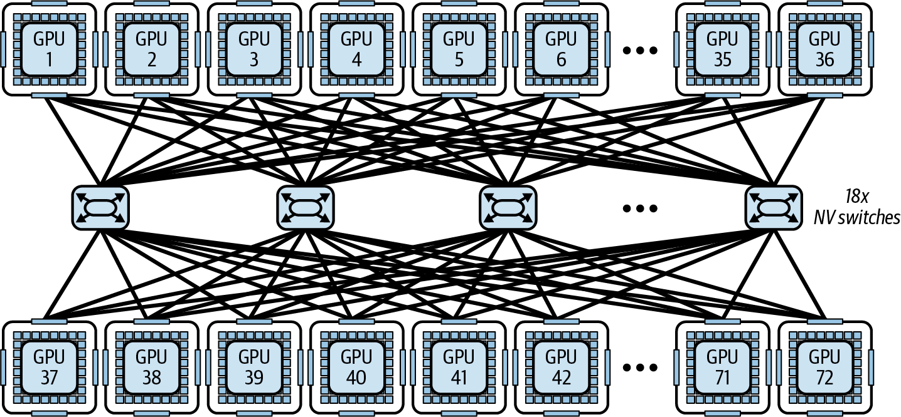
在此情况下，NVSwitch 需要缓冲并串行化其中许多传输，导致延迟尖峰。替代的协调优化方法是将发送方分为四组：第 1 组（GPU 1–18）先发送，数微秒后第 2 组（GPU 19–36）发送，依此类推。波次大小和间隔只是示例，应根据消息大小、端口数、实际遥测和 SLO 调整。
从 GPU 0 视角看，它顺序接收四个较小的流量波。任一时刻约只有 18 个 GPU 向 GPU 0 发送，这与其 18 端口数量相称；但端口数量并不能保证完全无排队或链路不饱和，因为带宽、报文调度和其他流量也会影响结果。第 4 组完成时，GPU 0 收齐所有数据，流量在时间上得到平滑与均衡。
这种错开波次的方法可泛化到许多模式。all-to-all 交换可拆成按轮次轮换的成对交换，常称为蝶形（butterfly）或洗牌模式（shuffle pattern）。洗牌会安排每个时间步哪些 GPU 相互通信，使每个 NVSwitch 端口保持忙碌但不过载。
NVSwitch 传输调度器可采用时间片算法，为特定 GPU 对或 GPU 组分配通信槽位。它不启动一个自由竞争的大型批量传输，而是执行多个小型同步通信步骤，每个步骤分配特定时间槽。这类似前述时分复用，有助于更可预测地使用 NVSwitch 交叉开关，但是否无冲突取决于实际流量和硬件调度。
值得注意的是，NVSwitch 硬件自身会尝试降低网络争用。例如，多个流争用同一链路时，硬件可交错调度各流的报文以促进公平性；确切仲裁行为取决于平台实现。
若可用，它还可能自适应选择不同内部交叉开关路径。不过从软件视角，可将这些自适应技术纳入网络设计，尽量避免一开始就触及这些限制。
精细调度还包括并发控制：限制推理期间并行运行的重传输数量。例如，在多 GPU 推理流水线中，可避免同时启动所有跨 GPU 专家汇集或广播操作。这在设计上以少量并行性换取更少争用。
推理中跨 GPU 同时进行 2–4 个大型专家汇集或广播传输有时是合适的折中点；更多可能带来收益递减或拥塞。这个数不是普适规则，须通过目标模型、拓扑和负载的基准测试确定。
例如，与其同时触发 12 个有使 NVSwitch 和 NVLink 饱和风险的集合通信，调度器可错开它们：每次最多运行 4 个大容量传输，等待完成后再启动下一组。由于避免过多传输重叠导致的拥塞，这种更受控方式在某些负载上可能更快；是否更快必须用端到端测量验证。
协调 NVSwitch 传输，就是把通信网络视为可调度的共享资源，类似调度 GPU 内核和 CPU 线程。通过调度网络资源，系统让高优先级流量避开干扰，并用低优先级流量填补空闲间隙以维持较高利用率。
错开和分组通信等技术通过避免严重争用模式，可能提高 NVSwitch 有效吞吐量。这将带来更可预测、延迟更低的通信；对关注尾延迟（由网络拥塞造成的异常慢响应）的推理服务尤为重要。
总之，多 GPU 推理中的拥塞感知、拓扑感知调度，关键在于让通信模式与给定硬件布局智能匹配。高性能推理系统会实时监控链路使用情况并适应 NVLink/NVSwitch 拓扑，方法包括谨慎放置任务、优化集合通信算法配置、多节点路由调整、MoE 专家重分配、动态运行时调整和数据传输的细粒度协调。
下面介绍一些补充核心调优策略的动态推理和运行时自适应技术。截至写作时，这些思路多为实验性且尚未广泛可用，但具有潜力，值得介绍。每项技术均附有简要描述和延伸阅读链接。
提前退出模型允许 LLM 在达到足够置信度时自行截短生成，例如减少对简单输入的不必要计算。动态提前退出方法监控中间表示与 logit 熵，在每层或每个 token 决定是否停止计算并输出最终结果。
这类网络因在中间层添加辅助分类器，需要专门模型架构或训练。文献在特定推理任务和评测设置中报告了最高约 30%–50% 的推理加速，且无明显精度损失（见 https://oreil.ly/dn3vl 和 https://oreil.ly/73AeE）；不能直接推广到任意 LLM 或任务。
DASH 一类框架将推理建模为马尔可夫决策过程，依据输入特征逐 token 动态决定执行或跳过每个 Transformer 层。通过学习小型评分网络，DASH 在其设置中可为许多 token 跳过 20%–40% 的层。
DASH 通常需要修改模型，在每层加入门控。但它可能在保持 NLP 基准性能的同时显著降低推理成本（https://oreil.ly/mz59T 和 https://oreil.ly/oL_Lr）；生产采用前应针对目标质量、安全性和延迟进行验证。
对于 MoE 模型，推测式专家路由预判后续 token 会激活哪些专家，并提前共同重排 token 与专家分配。
该技术会提前将 token 发送给预测专家。若预测错误，会浪费部分工作；预测良好时，整体通信会减少。相对静态专家并行（EP）+ 张量并行（TP）部署，相关研究在其评测设置中报告跨节点带宽用量最高可下降 30%；收益取决于路由可预测性与实现开销。
LazyLLM 使用轻量评分函数判定重要 token，并选择性地仅为这些 token 计算 KV 缓存。它在 prefill 和 decode 中剪除影响较低的 token（如停用词和填充 token）。通过只将昂贵注意力计算用于相关 token，LazyLLM 在长上下文工作负载的评测中报告端到端延迟降低约 20%–30%；剪枝策略必须针对模型、任务和质量要求验证，因为被视为低影响的 token 也可能承载关键语义。
双路由和动态调度技术在边缘部署等受限环境中，会给专家权重带来潜在内存问题。实践中，可让一部分专家常驻 GPU 内存，其余专家按需从闪存调入，通常依据使用频率决定。调入延迟、闪存耐久性、预取准确率和回退路径会决定实际可行性。
通过动态调整哪些低比特专家驻留内存、哪些被卸载，推理系统可在较低内存使用量下保持较高专家激活率；效果依赖工作集稳定性、I/O 带宽与量化质量。
静态 PTQ 与 QAT 是广为人知的技术；在线量化策略可在推理期间实时调整激活量化参数。例如，可使用滑动窗口统计每隔 N 个 token 修改激活量化器的 observer 范围。
此类动态激活量化实时监控激活统计，并每隔 N 个 token 重新计算 observer 范围。因而可将 FP16 分给方差高的“热”层，将 FP8 分给方差低的“冷”层；低方差层受限于较窄动态范围。其目标是降低量化误差并提高吞吐量，但每层、每 token 的精度切换并非大多数推理框架的现成功能，测量与控制开销可能抵消收益。
低方差层产生的激活若紧密聚集于均值附近，FP8 有限的指数和尾数位（如 E4M3）可能足以准确表示其值，进而节约计算和内存；是否没有可察觉的精度退化必须按目标模型、任务、输入分布与量化格式实测验证。
可考虑采用混合 FP8 策略：前向传播（如激活和权重）使用 E4M3，反向传播（如梯度）使用 E5M2。下面是使用 Transformer Engine 延迟缩放机制的代码；纯推理通常不执行反向传播，实际可用格式与策略取决于硬件和 Transformer Engine 版本：
fromtransformer_engine.common.recipeimportFormat,DelayedScalingrecipe=DelayedScaling(# E4M3 fwd, E5M2 bwdfp8_format=Format.HYBRID,amax_history_len=1024,# delayed scaling windowamax_compute_algo="max",)
这里用 amax_history_len=1024 设置延迟缩放窗口，这是一个常见默认值。除非收敛分析表明另有需要，否则通常保持 amax_compute_algo='max'；对部署环境应遵循所用 Transformer Engine 版本文档并进行数值验证。
同时，FP16 可保留给激活波动更大、即“热”的层。这些层需要更宽动态范围，以保留关键计算所需的数值保真度。
这种混合精度策略可用于某些无需离线校准的推理流水线，并按层调整数值保真度，从而权衡整体性能与模型精度。是否可用及收益需随模型和框架验证。
在现代 GPU 上，本章讨论的方法是从这些万亿参数级模型中挖掘每一分性能的实用途径。在真实部署中，动态运行时自适应技术可能决定高性能推理服务的成败。以下是本章的几个要点：
torch.compile 的稳态推理若可承担预热时间，优先使用 mode="reduce-overhead" 或自动调优模式。这有助于降低低延迟推理负载的运行时开销；支持情况与收益取决于 PyTorch 版本、模型图和输入形状。
动态优化 GPU 内核和 tile 大小。可行时利用张量内存加速器（Tensor Memory Accelerator，TMA）进行异步内存预取。优先使用提供自动调优的 CUTLASS、Triton 等库和编译器；除非性能确有必要，避免手工调优。
推理中可在 8 位和 4 位浮点（FP8/FP4）间切换，以平衡速度与精度，并按需混用 16 位精度。PyTorch 中可使用 Transformer Engine 支持 FP8，因为 torch.autocast() 不直接支持 FP8。实际精度切换支持与质量应按硬件、框架和模型验证。
将预填充（prefill，提示词处理）和解码（decode，生成）阶段分配到不同资源，并根据 KV 缓存命中、队列深度和负载等实时因素进行上下文感知请求路由。这有助于在长提示词下保持高吞吐量，同时避免拖慢短提示词响应；需权衡额外通信与调度开销。
根据输入/输出序列长度、模型结构（包括 MoE 路由）在数据并行、张量并行、流水线并行与混合执行组合间做运行时决策，包括复制或切分模型。生产环境通常将请求路由到预部署的池，而非对活跃实例即时重分片。
使用推测解码、运行中批次重塑和 token 级调度等技术改善吞吐量与延迟。vLLM、SGLang 和 NVIDIA TensorRT-LLM 等引擎实现了其中部分能力；这并不自动证明每种技术在所有生产负载下均有效，仍需测量。
可利用 Grace CPU 的统一寻址内存，将不常用 KV 缓存页卸载到 CPU 或 NVMe；使用 cudaMemAdvise、cudaMemPrefetchAsync 等 API 优化放置。若可用可考虑 GPUDirect Storage；它支持在适当的软件/硬件配置下绕过 CPU 内存路径在 GPU 与存储间传输数据，但并不等同于透明的按需分页。
使用 NVML、Nsight Systems/Compute、NVTX 插桩和 Prometheus 指标识别运行时瓶颈，并在验证后应用图与内核优化。还可使用 AI 分析遥测数据，以发现异常和优化机会。
本章技术可将静态推理部署转变为可自优化、可自适应的引擎。通过监控运行时信号（延迟、利用率、内存、网络吞吐量），并应用动态并行、精度缩放、自动调优内核、主动缓存、基于 RL 的控制和智能调度等策略，可推动超大模型推理接近系统极限。
成功的推理服务可在支持超大模型规模的同时，处理大量用户、大型输入上下文、大量上传文档、复杂推理和严格延迟 SLA。若这些优化在目标负载中有效，还可能以更少硬件实现相同吞吐量，从而改善成本效益；这不是自动保证。
请记住，网络结构是系统协同设计的一部分，而非事后补充。目标是有效利用 NVLink 和 NVSwitch 集群网络。随着模型和 GPU 集群增长，在理想且均衡的条件下，这可能带来接近线性的吞吐扩展，同时保持低延迟。借助适当调度，NVLink/NVSwitch 网络中的 GPU 可表现为紧密耦合的加速器，从软件视角近似一块大型 GPU；实际扩展性受通信模式、算法与硬件限制。
每项策略都是 AI 系统性能工程师工具箱中的工具。最有效的方案通常会组合使用它们。例如，可训练 RL 策略决定何时切换并行模式或调整精度，或通过预热让连续批处理调度器保持就绪。
不必同时实现全部技术；即便一两项也可能带来可观改进。可先从最容易的缓存和批处理改进着手，再逐层加入其他技术。
这些技术的主题是灵活性与适应性。推理运行时应能够响应当前工作负载重新配置自身，从而将庞大 LLM 转化为调优良好、可扩展且成本有效的生产服务。